The
Tropical Agriculturist
Vol. C.
PERADENIYA, JANUARY-MARCH, 1944.
No. 1.
| Pages | |
|---|---|
| Editorial .. .. . | 1 |
ORIGINAL ARTICLES
Experiments in Land Settlement. By W. V. D. Pieris, M.A., Dip. Agric. (Cantab),
The two line drawings illustrating the original article "Cyperus Procerus Rottboell", which appeared in the 4th quarter 1943 number of this journal, will be found at the end. The note "Two line drawings illustrating this note will be issued with the next number", which appeared immediately after the front cover of the 4th quarter 1943 number of this journal, refers to these two line drawings.
| Pyrethrum (contd.) .. .. . | 38 |
MEETINGS, CONFERENCES, &c.
| Report of the Proceedings of the Seventh Meeting of the Central Board of Agriculture held on October 4, 1943 .. .. . | 42 |
| Minutes of a Meeting of the Board of the Tea Research Institute held on December 17, 1943 .. .. . | 63 |
| Minutes of the 69th Meeting of the Rubber Research Board held on March 6, 1944 .. | 55 |
| Minutes of the 66th Meeting of the Board of Management, Coconut Research Scheme, held on March 20, 1944 .. .. . | 67 |
RETURNS
| Animal Disease Return for the Month ended March, 1944 .. .. . | 69 |
| Metereological Reports for January to March, 1944 .. .. . | 70-72 |
1—J. N. A 36777-905 (4/44)
VOL. C.
PERADENIYA, JANUARY-MARCH, 1944.
No. 1.
| Pages | |
|---|---|
| Editorial .. .. . | 1 |
| Experiments in Land Settlement. By W. V. D. Pieris, M.A., Dip. Agric. (Cantab), B.Sc. (London) .. .. . | 4 |
| Cultural Experiments with Turmeric (Cucurma Domestica Val.)—III. The Influence of Type of Seed, Mulching, Planting, Depth and Shade on Yield. By W. R. C. Paul, M.A. (Cantab), Ph.D., M.Sc. (Lond.), D.I.C., and M. Fernando, Ph.D., B.Sc. (Lond.), D.I.C. .. .. . | 9 |
| A Leaf Curl Disease of Tomato and its Relation to Some Other Plants. By J. W. L. Peiris, B.Sc. (Lond.) .. .. . | 14 |
| Food Production (contd.) .. .. . | 20 |
| Pyrethrum .. .. . | 34 |
| Pyrethrum (contd.) .. .. . | 38 |
| Report of the Proceedings of the Seventh Meeting of the Central Board of Agriculture held on October 4, 1943 .. .. . | 42 |
| Minutes of a Meeting of the Board of the Tea Research Institute held on December 17, 1943 .. .. . | 63 |
| Minutes of the 69th Meeting of the Rubber Research Board held on March 6, 1944 .. | 65 |
| Minutes of the 66th Meeting of the Board of Management, Coconut Research Scheme, held on March 20, 1944 .. .. . | 67 |
| Animal Disease Return for the Month ended March, 1944 .. .. . | 69 |
| Meteorological Reports for January to March, 1944 .. .. . | 70-72 |
1—J. N. A 36777-905 (4/44)
[Faint page: no legible print of its own could be verified; text withheld (stage 4 review list)]
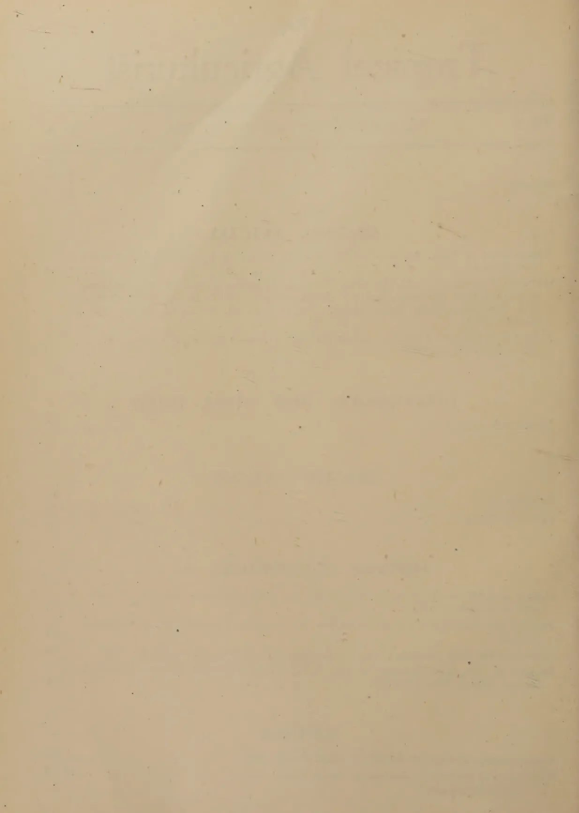
This image shows a blank, aged, cream-colored page, likely from a book or notebook. The paper has a slightly textured appearance with some minor discoloration and faint horizontal lines running across it. A prominent diagonal crease or fold line is visible, starting from the top left and extending towards the middle right. There is no text or other markings on the page.The
JANUARY TO MARCH, 1944.
THE memorandum under the heading "Food Production" the last part of which is published in the present number covers a much larger range than the author's title suggests. In fact it is a survey of the whole field of the agricultural industry in so far as it relates to the raising of seasonal crops. It formulates constructive proposals for the promotion of that industry on two alternative bases: the first that the aim of Government is a progressive improvement in the economic life of the rural population without reference to a policy of self-sufficiency of the country in respect of its food supplies and with some reasonable relation between public expenditure and the value of the results that the effort is expected to produce; and the second that Government desires self-sufficiency within a given period of time with no strict relation between the expenditure and the money value of the results. These proposals are preceded by an exhaustive discussion of the factors that condition this form of agriculture in the country. The author admits that the discussion has the quality of an apologia instinct with the spirit of pessimism, even of defeatism, and goes on to say that a frank examination of our agricultural ideas is necessary before a search for remedial measures is begun. We are in entire agreement with this point of view which requires to be restated with some emphasis because a proneness to assume that what has been done elsewhere and under different conditions can be done here is noticeable in many quarters. For instance, the high yields of paddy in countries that enjoy the Mediterranean type of climate are often quoted with the implication, and, sometimes, the explicit assertion, that, if the Department of Agriculture shows greater efficiency and resourcefulness, Ceylon should be able to produce the same results. This is as fallacious as the statement that if the planter is good an average yield of coconuts equal to that of the Chilaw District may be realized in the Nawalapitiya District. If one is not prepared to accept scientific argument, one should be prepared to be convinced by the general experience of tropical countries. Java probably has the most fertile soil in the world. The water supply is for the most part so regular and dependable that pisciculture in cultivated paddy fields is as common a practice as it is in Italy. Paddy receives the benefits of a rotation with a heavily manured and intensively cultivated crop of sugar cane. The Dutch Botanists in the East Indies held unchallenged pre-eminence in the world until the Russians made their recent advance in scientific research, and it may be presumed that they have done everything which selection and breeding can do to establish high-yielding strains. Yet we are not aware of a single recorded case of a
2yield of paddy in Java equal to half the high yields of the Mediterranean countries and the difference between the yield of a good field in Java and that of a similar field in Ceylon is not greater than what one would expect from the measure of the difference in natural soil fertility.
A similar tendency to hasty and irresponsible comparison has manifested itself with regard to emergency food production. A country faced with an emergency and seeking to increase its food production normally employs for the purpose its existing farmers with their farms and farm equipment. In India, for example, the average farmer's holding may consist of 20 acres of land of which seven acres are put under a grain, eight acres under cotton and five acres under an oil seed and other miscellaneous crops. The farm is equipped with the live and dead stock necessary for working a farm of that size, including a pair of bullocks, a plough, harrows, and a seed drill. The land is cultivated every season and the only occupation of the farmer and of his family is employment on the farm. To increase the food supply the farmer has only to reduce the area under cotton and oil seed and to increase the area under grain. The grain harvest of India can probably be increased by 50 per cent. in one season by the mere substitution of one seed for another at the time of sowing without one additional acre of land being ploughed up, without one additional implement or bullock being introduced, and without one extra hour of human labour being applied to agriculture. The problem of the mixed farm of Britain and of Western Europe is only slightly different. A British farm of 400 acres may comprise 75 acres in wheat, 100 acres in other grains, roots, vegetables and fodder crops, and 225 acres in permanent pasture. If more wheat is required in an emergency, the farmer is ordered to break up part of the pasture with the plough and sow wheat for which he is guaranteed a remunerative price. The farmer is there carrying on farming as a whole-time business; the farm implements are there on the land or can be easily procured; and in the last resort, both the heavier implements and labour can be made the subject of national organization. In Ceylon few lands in which paddy, the staple grain of the country, is grown are, or can be, put to other uses in rotation. Practically all the land which is suitable for paddy is cropped once and often twice a year with paddy. Whatever results the extension of irrigation facilities and experiments with new methods of agriculture may produce in the future, it is impossible to bring about within a short time either an appreciable extension of the area cultivated with paddy or any considerable increase of yield from that area. Considered in relation to a season or a year the paddy crop may be regarded as nearly fixed. There is no dry land farming as opposed to the semi-aquatic cultivation of rice. The desultory market gardening on an infinitesimal scale in the vicinity of centres of population and the intensive agriculture of the type which a high underground water table in the Jaffna Peninsula enables the inhabitants of that district to practice form only a very minor exception to the general proposition that, in the whole country, there is not a single one acre unit of high land which is regularly ploughed and cultivated with annual crops; not a single plough in use or available for use for that purpose; not a single man engaged in that form of occupation. Should a man of enterprise and energy decide to adopt arable farming as his profession in the thickly inhabited wet zone, he will
3not find the land. In these circumstances varieties of food that can take the place of rice have to be grown in the following four groups of land :—
Many difficulties confront the man who tries to tackle land under the first group. In districts in which fencing material is scarce he must begin by erecting a fence which will resist the attention of the predatory cow. He has an exhausted soil in which there is little experience of growing anything but a few root-crops. The scale of his operations is determined by the only available implements—the mammoth and the garden fork. The second group of lands will yield two or three good crops of mixed grains and roots but the small available area has been already used up in the last two years. The third group of lands is similar to the second, but suffers from remoteness from village settlements. There remains the sparsely inhabited malarial dry zone. Here there is plenty of land which can be brought under shifting cultivation, but its utilization is limited by the difficulty of attracting labour and by the capacity of human labour unaided by anything but a felling axe and a knife to bring forest land under cultivation. A family working throughout the year cannot wrest a crop from more than two acres, and that is barely sufficient for the family.
These difficulties and drawbacks should not deter us from making the greatest possible effort. Our object in emphasizing them is not discouragement but caution. It is as necessary to save the people from the demoralization that follows unreasoning optimism as it is to urge them to go the furthest that the limiting factors of nature permit in leaving the spectre of starvation behind them.
4W. V. D. PIERIS, M.A., Dip. Agric. (Cantab.), B.Sc. (Lond.)
TWO recent experiments in land settlement, in Libya and Nigeria respectively, are worthy of more than passing notice.
When the eighth and, unfortunately, for some time to come, the last International Congress of Tropical and Sub-Tropical Agriculture was held at Tripoli during March, 1939, the delegates from the different countries, including Sir John Russell and Sir Arthur Hill representing Great Britain, were taken to see the new villages of Crispi, Michele Bianchi and Oliveti, established in the sandy, barren soil that is so characteristic of most of Libya. Crispi was only four months old at the time and was being established on what seemed a desert plain. It consisted of an aggregate of over 300 farms varying in size from 37 to 120 acres according to the locality, a part being irrigated for the cultivation of annual crops and the remainder planted with olives, almonds and vines. A civic centre had been constructed, with a church, town-hall with cinema, hospital, school and co-operative store, arranged round a central square. The place was brand new, but the sand on which it stood appeared to hold out little promise of success.
Michele Bianchi and Oliveti showed, however, how wide of the mark such first impressions could be. These villages were less than three years old at the time and had been founded on the same type of hungry sand, but what a contrast they were to Crispi and what a revelation of the possibilities of irrigation, good cultivation and purposive management. Here were olive and almond trees, flourishing and beginning to bear, and irrigated crops in fine condition. Italians from the Venetian plains were colonizing the deserts of Africa successfully and with amazing rapidity. And how was it all done? By nothing more or less than the adoption of a definite plan of "nursing" the colonist while his farm was taking shape, by giving him on trust his farm, dwelling house, sheds, equipment and livestock. For a short time at the start, he was paid a fixed salary and during the period of nursing he farmed on a crop-sharing basis, until in the fifth or sixth year he would assume direct management. At the end of nine years, having paid back one-third of his debt to the State, he would become sole owner of the farm and be allowed another twenty-five years to pay back the balance of his debt.
The secrets of success here were, without doubt, the selection of the right type of men for colonizing, treating them with a reasonable degree of trust, the correct comprehension of what a farming community should be, assurance to the colonists of a respectable communal life with a modicum of religion and civilized comfort thrown in, promise of immediate medical aid when required, collective interest in the children of the community, provision
5by the State on a credit system of decent housing, implements and live-stock, a cash salary to live on during the first lean years when the land was being got ready for cultivation and the crops put down and, above and beyond and embracing all, water to drink, water to wash in and water to irrigate the barren sand and make it blossom like the rose. Only a Dry Zone Farmer in Ceylon can understand what it is to find water in the desert. It is not known what has happened to Crispi, Michele Bianchi and Oliveti in this year of grace, 1944, but it is hoped that they will not be allowed to go back to the desert.
The background to this experiment in the colonization of the deserts of Libya was, of course, the gigantic work of the draining and settlement of the immense plain in Italy, stretching between the Volscian Mountains, the Tyrrhene Sea and the Alban Hills, which in the days of Ancient Rome was called Pomptinae Paludes or the Pontine Marshes, because it was the breeding ground of malaria. Like our own Dry Zone, this territory must have been very fertile for Livy to describe it as, "Locus ille olim trium et viginti urbium fuisse dicitur"; and again as with our Dry Zone, it was the defeat of the native Volscians that turned the land over to malaria and gradual and almost complete depopulation, so that Alfredo Oriani, towards the end of last century, was moved to write, "It is a mournful spectacle! Wherever I turn my eyes I see naked expansions of meadow, ravaged and unending. At rare intervals a few twisted oak trees stand up like the survivors of some catastrophe, spared as a refuge for ravens and crows by these spirits of destruction", and Ernest Hebert, the Frenchman, described the peasants as yellow-skinned and haggard with malaria, gliding in boats slowly down the river through a desolate landscape, their eyes bright with fever. And yet by 1934, the Pontine Marshes became the new Italian Province of Littoria with more than half a million acres under cultivation and a population of 215,000. The prosperity and the spirit of the place is thus described by a visitor in 1938, "I visited four or five farms in the plain. They are all worked by ex-Service men, most of whom come from the Venetian province and Lombardy, for it is there that men know the great secrets of the soil. The "podere" consists of some 15-25 hectares of land with two-storeyed farmhouse, stables, bakery, and dairy. Each settlement must consist of not less than six members. Most of the families consist of 13-14, that is to say, in addition to the man and his wife and children there are grandmother, grandfather, sisters, and even occasionally cousins. This is characteristic of Italy, where farming is a family co-operative enterprise. One "podere" was run by a young man from Padua with his wife, sisters, brother, and children. He had a bull, five cows and two donkeys in the stables, and his poultry yard was full of hens and ducks. I sat in the parlour telling stories to the children and listening to tales of the war in the Alps, narrated in a strong Venetian dialect by the owner and his brother. They told me that the farmers in the Pontine Marshes worked co-operatively and are very friendly with one another. When I visited Sabaudia in the middle of the day I found it empty. The streets were deserted, for all the people were out working in the plain. But towards evening I saw hosts of men and women on bicycles approaching. Soon the town was full of excited people; the broad, roomy cafes were thronged and it was soon time for the theatrical and cinema performances
6to begin. After the people have enjoyed their hours of leisure they drive their cars and ride their bicycles back to their farms. I was interested to observe the methods employed to make rural life more attractive for the modern worker. The town with the broad piazza acts as the assembly and the place of enjoyment of the settlers. In the town, too, they may obtain advice on agricultural methods, for every two hundred "poderi" has a group of offices, where experts work and supervise the methods used in farming. The town, too, supplies the hospitals, schools, and playgrounds for the children. Finally, the town is a place of beauty. It has been perfectly planned and its buildings have plenty of marble and travertine in their construction".
With the experiment on the settlement of Italians in Libya may be compared another, commenced in the 1920's, on the settlement of the Hausas of Nigeria as landed peasants in their own country, a description of which will be found in the latest issue to hand of the Journal of the Imperial College of Tropical Agriculture, Trinidad.* Here the experimentalists were, to start with, the Empire Cotton Growing Corporation and the site of the experiment was a large farm at a place called Daudawa, in Katsina Emirate. The functions of this farm, we are told, were to co-operate with the Agricultural Department in the multiplication of improved strains of cotton, bred by the Government Agricultural Botanist at Samaru. Both the farm and settlements have now been taken over by the Nigerian Government.
To become a settler at Daudawa, a man has to pay an entrance fee of 30 shillings. Promotion to settlership is described as follows:—"A casual labourer comes to Daudawa for a few days' work, becomes a regular labourer and is attracted by the settlement scheme, he then deposits regularly from his wages till he has a credit of 30 shillings, when he is given the opportunity to become a settler. If of suitable character he is then given a cleared fifteen acre holding, a compound consisting of two round houses and a cattle pen, four cattle and a plough. It has cost £22. 10s. 0d. to clear the land, and £2. 10s. 0d. to put up the buildings, but this is not debited to the farmer as Government requires the settler to grow eight or nine acres of cotton annually and is thus saved the expense of growing this cotton. On the other hand the farmer must repay the Katsina Native Administration the value of the cattle and implements, and in addition a 5 per cent. annual interest on annual outstanding balances is charged, as an insurance against cattle losses. He has security of tenure for life if he continues to farm satisfactorily."
We are not told what happens to his holding when he dies, whether his wife and children may continue to farm it, whether they must make way for another able-bodied Hausa male or whether they have to pay further "entrance fees" to keep the holding for themselves. It is plain that there are certain undesirable features in this settlement scheme, but we are told that it has not been a failure. The colonist sells his ground-nut and seed-cotton to the organization, which also buys his fat cattle and allows him to deposit money in a savings fund. In return, he is given working cattle, implements, cash credits &c. As free amenities, he receives a certain water supply, repairs to buildings, assistance with soil-conservation works, veterinary attention, dipping facilities &c. But there is no school and no medical clinic on the estate.
* Vol. XX, No. 4, April, 1943, pp. 71-73.
7From a purely agricultural view-point, this Nigerian experiment has yielded some very interesting results.
(1) It was found that a crop rotation of two years of cotton followed by one of Mucuna (the Florida, Velvet or Bengal Bean) as a green manure resulted in a rapid loss of soil fertility, but so small a dressing as one ton of farmyard manure per acre once in two years resulted in a more than 100 per cent. increase in the yield of seed-cotton.
(2) Although two bullocks and a plough were quite sufficient for working a 15-acre holding, at least four bullocks were required to produce 15 tons of manure, which was the annual requirement for a proper maintenance of soil fertility. The colonist was, therefore, given two working bullocks and two three-year olds which would be ready to work in the following year, the latter being mainly for the production of manure. The colonist could thus, given reasonable luck, stall-feed his cattle during the rains, sell the previous years working cattle as fat cattle at the end of the rainy season, utilize the two younger beasts for draught, buy two more three-year olds and make a tidy little profit on the whole business.
(3) Stall-feeding the cattle during the rains was proved to be an insurance against wet-weather diseases and also resulted in increased manure.
After giving due credit for these useful agricultural observations, the Nigerian experiment is seen to be imperfectly conceived and cheese-paring in comparison with its Italian counterpart in Libya. It is admitted that its "main object was and still is . . . to produce cotton-seed" for the expansion of the cotton growing programme of the Empire Cotton Growing Corporation; and land settlement was incidental, in fact, almost accidental, inadequately planned and run on a mere "work-house" scale; whereas the Italian venture was a carefully organized State undertaking from the very start and directed solely towards the settlement of the European Italian population surplus in Libya and the winning back of the desert for the benefit of man. The basic motive of the Italians may be disagreeable, but we can have nothing but admiration for their technique of land settlement. Careful costings have, indeed, shown that the Nigerian Hausa on his 15-acre holding can show a profit at the end of the first working year, but it is said to be about £ 13, which is roughly equal to the initial cost of his stock and equipment, an achievement hardly worth bragging about. The scheme is said to be economically sound, but it can be attractive only to those suffering from extreme poverty and land-hunger.
Here, then, we have two well-authenticated attempts at land settlement comparable, but in many respects superior, to the land development schemes in Ceylon. The very real superiority of the Libyan and Nigerian schemes lies in the better organization of the settlements,—and in this respect the Italian model is the one that is more worthy of emulation,—and the greater amount of "nursing" given to the colonists during the early years; and it has been demonstrated beyond a doubt that such nursing is necessary for both Small Farmer and Peasant types of settler and that it does pay in the long run.
In Ceylon, the case is very different, especially outside the few large irrigation schemes and at least so far as it applies to the Middle Class Colonists.
8Here, a man is given anything up to 50 acres of jungle in an unfamiliar place and told to get on with it. Penalties, not always enforced, are attached to any failure on his part to plant up the land, but he is given very little help and guidance to do so. He must, at his own expense and without any State aid whatever, get the jungle cleared and planted, erect a stock-proof fence against wild animals and stray cattle, search for and buy his planting material, sink his wells, buy pumps and piping and attend to other irrigation needs, do his own soil-conservation work if he knows anything about it, which is most unlikely, build his house, buy his implements and livestock, build his sheds, stores and pens, and last but not least market his produce, both perishable and imperishable, in the best way he can. He is provided with no agricultural credits and lacks supervision from the State and organization with his fellows ; and woe be unto him and to the land if he starts his venture with too little capital, an inadequate knowledge of farming and farming costs and without a mild flair for business. Were he to do so as, alas, he often does, he will most certainly ruin himself and ruin the land ; and the latter ruin will be by far the greater.
9W. R. C. PAUL, M.A. (Cantab), Ph.D., M.Sc. (Lond.), D.I.C.,
AGRICULTURAL OFFICER, SOUTH WESTERN DIVISION
AND
M. FERNANDO, Ph.D., B.Sc. (Lond.), D.I.C.
ACTING BOTANIST
THE results of an experiment set down in the 1941-42 season, at the Experiment Station, Nugawela, for the purpose of investigating the effect of type of seed, frequency of mulching, depth of planting and shade on the yield of two varieties of turmeric (Cucurma domestica Val.) are reported.
Shade produced a large and significant reduction in the yield of uncured rhizomes.
Plants derived from "fingers" significantly outyielded those derived from mother setts. The superior performance of "fingers" appears to be largely due to the higher seed rate used with this type of planting material.
In smallholdings in the wet zone, turmeric is usually grown in mixture with a variety of crops, and is, under these conditions, often subjected to heavy shade. Shade is a factor on which divergent opinions have been expressed, and its effect on the turmeric crop has not hitherto been the subject of experiment.
Although the depth of planting of setts is not considered a factor of much importance by the grower, accurate information on this point is desired in view of its bearing on planting costs.
In experiments recorded in previous numbers of this series (Paul & Fernando, 1941a & 1941b), a single rice-straw mulch at planting time increased yields considerably. The possibility of securing further increase in yield by more frequent mulching warranted investigation.
The examination, in previous experiments (Paul & Fernando, 1941a & 1941b), of the suitability of various kinds of planting material proved inconclusive. A study of the effect of seed type was accordingly included in the experiment presented herein.
10TREATMENTSThere were 32 treatments consisting of the following in all combinations :—
A single replication of 32 plots was distributed over four blocks of eight plots. The plots measured 4 ft. by 16 ft. (1/681 acre). Appendix 1 provides details of the design.
MATERIAL AND METHODSThe experiment was carried out at the Experiment Station, Nugawela, in the 1941-42 season. The soil of the experimental area was a moderately fertile, lateritic loam with a relatively low pH value. The land was mamotied, and received an application of 10 tons compost per acre on the day previous to planting. The rhizomes were planted at a spacing of 1 ft. by 1 ft. on April 23, 1941. The seed rates were as follows :— —12 cwt. per acre ; —6 cwt. per acre ; —27 cwt. per acre ; —9 cwt. per acre. The seed rates were higher for the Guntur than for the local variety, and much higher for the "fingers" than for the mother setts. On the date of planting, all plots were mulched at the rate of 12 tons rice straw per acre. The plots received a further mulch of 12 tons rice straw per acre on October 20.
A light cadjan shade was erected at a height of 18 inches over the plots on the day following the planting. The shade was progressively raised as the plants increased in height—it was raised to three feet on May 23, and to five feet on August 19. The overhead shade was observed to be ineffective against the early morning and the late afternoon sun, and was accordingly supplemented on June 4, by lateral cadjan tats.
The sprouts were first observed above ground on May 13, Mother setts tended to sprout earlier than "fingers". Records of germination in plots subjected to the various treatments are given in Appendix 3. Sprouting was not evident in some of the hills even after nine weeks. On June 2, the dormant seed in these hills was replaced by sprouted seed from adjacent nurseries.
The plots received one weeding on September 23.
The pyralid caterpillar, Dichocrocis punctiferalis Guen., made its first appearance on August 5. This stem-boring caterpillar is the only troublesome pest of the turmeric crop in this country. The damage was severer in the shaded plots. The infestation was checked by the removal of the borer from invaded stems by the use of a wire hook. In the early stages the plants under shade made more rapid growth. Marked dwarfing effects were, however, evident later in the plots. On October 1, shaded plants were observed to be shorter and smaller leaved.
11By the middle of December, the plants had begun to yellow and die down. Shaded plants showed earlier senescence. The crop was lifted on February 6 and 7, 1942.
Rainfall data for the experimental season are given in Appendix 2.
The analysis of variance of weights of uncured rhizomes produced by plots subjected to the various treatments is given in Appendix 4. The variance ratios for the seed type and shade treatments are significant at the one per cent. point.
The total yields of uncured rhizomes in shaded and unshaded plots in the two seed types are given below:—
Table I.—Yields of Uncured Rhizomes in Pounds
| Shaded. | Unshaded. | Total. | |
|---|---|---|---|
| "Fingers" .. | 78 | 517 | 595 |
| Mother Setts .. | 64 | 436 | 500 |
| Total .. | 142 | 953 | 1095 |
The most striking feature of the results is the demonstration of marked depressant effects of shade on the yield of turmeric. The degree of shade to which the experimental plants were subjected was not more intense than that which turmeric crops grown in small holdings in mixture with jak, arecanut, breadfruit, &c., often receive. An investigation of the extent to which other crops like ginger, Colocasia spp., Xanthosoma spp. and sweet potatoes, that compose the ground vegetation in these smallholdings, are adversely affected by a overhead canopy would be of considerable interest. The effects would find an obvious explanation in the slow rate of photosynthesis under conditions of poor illumination.
Plants derived from "fingers" gave yields significantly higher than those derived from mother setts. The higher seed rate used with the former type of planting material would have contributed to its superiority. The results obtained in previous experiments (Paul & Fernando, 1941a & 1941b) must be interpreted with caution as the seed rates for different varieties and seed types are not comparable.
The heavy initial mulch of 12 tons of rice straw per acre explains the absence of response to a second application.
Shallow planting is not inferior to deep planting and should be preferred in view of the lower cost.
12ACKNOWLEDGMENTWe are grateful to Mr. E. C. Wirasinha, Agricultural Instructor, for his careful supervision of field operations.
REFERENCESA factorial design by Yates (1937) of the form 25 was adopted. The 32 treatments (five factors each at two levels were arranged in the following manner :
| BLOCK 1 | BLOCK 2 | BLOCK 3 | BLOCK 4 |
|---|---|---|---|
| 1 1 1 1 1* | 1 1 1 0 1 | 1 1 1 0 0 | 1 1 1 1 0 |
| 1 1 0 1 0 | 1 1 0 0 0 | 1 1 0 0 1 | 1 1 0 1 1 |
| 1 0 1 0 1 | 1 0 1 1 1 | 1 0 0 1 1 | 1 0 1 0 0 |
| 1 0 0 0 0 | 1 0 0 1 0 | 1 0 1 1 0 | 1 0 0 0 1 |
| 0 1 1 0 0 | 0 1 1 1 0 | 0 1 1 1 1 | 0 1 1 0 1 |
| 0 1 0 0 1 | 0 1 0 1 1 | 0 1 0 1 0 | 0 1 0 0 0 |
| 0 0 1 1 0 | 0 0 1 0 0 | 0 0 1 0 1 | 0 0 1 1 1 |
| 0 0 0 1 1 | 0 0 0 0 1 | 0 0 0 0 0 | 0 0 0 1 0 |
The three interactions V.T.D., V.M.S., and T.M.D.S. were confounded with the four blocks. For further details of the design, reference may be made to Yates (1937).
*The levels of the five factors in each treatment combination are given in succession, e.g., 11010 indicates .
APPENDIX 2. (Rainfall Records for the Period April 1941–February 1942.)| Month. | Total Rainfall in Inches. |
Number of Rainy Days. |
|---|---|---|
| April, 1941 .. .. | 8.18 | 9 |
| May .. .. | 11.16 | 19 |
| June .. .. | 6.37 | 22 |
| July .. .. | 3.96 | 16 |
| August .. .. | 6.61 | 27 |
| September .. .. | 3.87 | 19 |
| October .. .. | 14.99 | 22 |
| November .. .. | 19.77 | 26 |
| December .. .. | 7.94 | 13 |
| January, 1942 .. .. | 2.42 | 9 |
| February .. .. | 1.00 | 4 |
| Treatment. | Numbers of Sprouted Setts Observed on | ||||||
|---|---|---|---|---|---|---|---|
| 13.5.41 | 20.5.41 | 27.5.41 | 4.6.41 | 11.6.41 | 18.6.41 | 25.6.41 | |
| 1 0 0 0 1* .. | — | 1 | 16 | 32 | 44 | 56 | 60 |
| 0 0 0 0 0 .. | — | 7 | 39 | 45 | 62 | 63 | 63 |
| 0 1 0 0 0 .. | — | 15 | 42 | 45 | 49 | 49 | 50 |
| 1 1 0 0 1 .. | 1 | 5 | 35 | 48 | 59 | 59 | 59 |
| 0 1 1 0 1 .. | — | 12 | 38 | 47 | 52 | 50 | 50 |
| 0 0 1 1 1 .. | — | 5 | 38 | 49 | 64 | 64 | 64 |
| 0 1 1 1 1 .. | — | 3 | 35 | 47 | 56 | 56 | 56 |
| 0 0 1 0 1 .. | — | 10 | 33 | 54 | 64 | 64 | 64 |
| 0 1 0 1 0 .. | — | 8 | 37 | 45 | 45 | 46 | 46 |
| 1 1 1 0 0 .. | — | 6 | 31 | 51 | 55 | 59 | 59 |
| 0 0 0 1 0 .. | — | 3 | 30 | 48 | 60 | 61 | 63 |
| 1 0 1 0 0 .. | — | — | 11 | 31 | 47 | 56 | 58 |
| 1 0 1 1 0 .. | — | — | 6 | 39 | 50 | 57 | 59 |
| 1 1 0 1 1 .. | — | 3 | 37 | 42 | 56 | 57 | 58 |
| 1 0 0 1 1 .. | — | — | 7 | 27 | 35 | 52 | 59 |
| 1 1 1 1 0 .. | — | 3 | 34 | 52 | 53 | 56 | 56 |
| 0 0 1 0 0 .. | 1 | 6 | 41 | 52 | 58 | 62 | 64 |
| 0 1 1 1 0 .. | 1 | 3 | 36 | 45 | 45 | 47 | 48 |
| 0 0 0 0 1 .. | — | 8 | 30 | 48 | 58 | 61 | 63 |
| 1 0 0 0 0 .. | — | 1 | 9 | 39 | 54 | 59 | 61 |
| 1 0 1 0 1 .. | — | 1 | 8 | 28 | 46 | 56 | 57 |
| 1 0 0 1 0 .. | — | — | 6 | 26 | 43 | 51 | 54 |
| 1 0 1 1 1 .. | — | 1 | 8 | 28 | 40 | 54 | 57 |
| 1 1 0 1 0 .. | 1 | 6 | 25 | 38 | 56 | 56 | 57 |
| 0 1 0 0 1 .. | — | 9 | 31 | 47 | 50 | 53 | 55 |
| 1 1 1 1 1 .. | — | 1 | 22 | 45 | 48 | 56 | 56 |
| 0 1 1 0 0 .. | 1 | 11 | 45 | 49 | 51 | 52 | 54 |
| 0 1 0 1 1 .. | — | 13 | 24 | 39 | 41 | 47 | 47 |
| 0 0 0 1 1 .. | — | 2 | 24 | 45 | 60 | 61 | 62 |
| 1 1 0 0 0 .. | — | 3 | 34 | 51 | 58 | 59 | 60 |
| 0 0 1 1 0 .. | — | 2 | 28 | 61 | 62 | 63 | 64 |
| 1 1 1 0 1 .. | — | 3 | 25 | 48 | 52 | 56 | 56 |
* The levels of the five factors in each treatment combination are given in succession, e.g., 10001 indicates .
APPENDIX 4. (Analysis of Variance of Weights of Uncured Rhizomes)| Main Effects : | D.F. | S.S. | M.S. |
|---|---|---|---|
| V .. | 1 | 1.53 | 1.53 |
| T .. | 1 | 282.03 | 282.03 |
| M .. | 1 | 63.28 | 63.28 |
| D .. | 1 | 42.78 | 42.78 |
| I .. | 1 | 20,553.78 | 20,553.78 |
| Two-Factor Interactions : | |||
| VT .. | 1 | 0.03 | 0.03 |
| VM .. | 1 | 569.53 | 569.53 |
| VD .. | 1 | 16.53 | 16.53 |
| VS .. | 1 | 16.53 | 16.53 |
| TM .. | 1 | 87.78 | 87.78 |
| TD .. | 1 | 7.03 | 7.03 |
| TS .. | 1 | 140.28 | 140.28 |
| MD .. | 1 | 13.78 | 13.78 |
| MS .. | 1 | 75.03 | 75.03 |
| DS .. | 1 | 34.03 | 34.03 |
| Main Effects and Two-Factor Interactions .. | 15 | 960.55 | 64.04 |
| Blocks .. | 3 | — | — |
| Remainder .. | 13 | 234.40 | 18.03 |
| 31 |
J. W. L. PEIRIS, B.Sc. (Lond.)
RESEARCH ASSISTANT IN PLANT PATHOLOGY.
Complaints have been received from time to time of a common disease of tomato (Lycopersicum esculentum Mill.) which caused a general stunting of the plant, a curling and bronzing of the leaves and which sometimes even brought on a die-back ultimately resulting in the death of the plant. In the early stages, the disease led to a certain amount of speculation as to whether it was caused by a virus (specially as leaf-curl diseases were originally believed to be of the virus complex) or whether it was a nutritional deficiency. Later investigation however, the results of which are outlined in the present communication, revealed that the malformation was due to the injury caused by a species of mites and that the disease is communicable to a number of other plants.
The type of leaf curl caused by mites may affect a tomato plant at any stage in its life history after the first few foliage leaves have expanded. The symptoms manifest themselves conspicuously on the apices of the terminal or axillary shoots. Here the leaflets are curled and distorted and their lower surface presents a ribbed appearance owing to the buckling of the intervenial areas. The rachis on which the leaflets are borne shows a downward curving and the margins of the leaflets themselves show a general tendency to curve downwards or abaxially. When young leaflets are infested, the petiolar end is first involved and the margin of the blade in this region more often curves upwards giving the leaflet a "shovel-shaped" appearance. The abaxial curving is specially characteristic of those leaflets that are attacked when they are more than half grown. These leaflets also present a peculiar shiny or "glossy" appearance on their lower side. This is by far the most characteristic feature of the disease. Subsequently the affected leaflets become "bronzed" or fawn-coloured. This is at first noticeable on the lower surface but may later spread to the upper surface where it can occur in patches or involve the leaflet completely. Generally the part of the stem bearing the malformed leaves is also "bronzed" and the affected stems and leaves are smooth to the touch. At a later stage in the course of this malformation the leaflets are thickened, attenuated and reduced to such brittle, scale-like structures that the plant is only recognised with difficulty. A die-back very often follows and although the plant attempts to survive by throwing out axillary shoots, these are involved in turn and follow the same fate as the main shoot, before they have grown a few centimetres. If the plant has been able to set any fruit in spite of the attack, these also may be attacked. Such fruits develop a russetting instead of the normal shiny, smooth skin
15that is characteristic of healthy fruit. The skin becomes more or less corky and rough accompanied by cracking and, though edible, the fruits thus affected are unsightly and have poor marketable value.
To the naked eye there does not appear to be any visible cause which may account for this malformation, but if the lower surface of a diseased leaflet were examined closely with a lens, numerous minute crawling mites may be seen in various stages of their life history. The mites have smooth glistening skins. They are hyaline when young with three pairs of legs but possess a clear light-amber colour and four pairs of legs in the adult stage. Numerous eggs are present firmly attached to the lower surface of infested leaflets and are recognised as whitish rounded-oval objects with a peculiar sculpturing on the wall. The larva comes out through an irregular tear on this wall which persists for some time showing rows of tiny white globules which form the sculpturing on the empty transparent egg case. Careful examination of the affected plants revealed no other organisms, (bacteria or fungi) which may be associated with this malformation and the root systems of these plants were quite normal. The mites are present in sufficient numbers to suggest that the malformation of the plant is due to the mechanical injury caused by them. The mere presence of the mites, however, is not considered enough evidence to incriminate this organism and inoculation experiments were carried out to confirm this observation.
Three weeks old healthy tomato seedlings of the Marglobe variety were transplanted into pots containing garden soil well mixed with cattle manure. Three of these pots were used, each containing five plants. After a week the plants had established themselves they were sprayed with a wash made up of ( oz. sulfinette in 1 gallon of water). The pots were then covered with insect proof cloth cages and marked A, B and C respectively. Except for a few minutes in the morning when the plants were watered, they continued to be under insect proof conditions for the duration of the experiment. Three weeks later, when the plants were six weeks old the ten plants in pots A and B were inoculated with mites from tomato leaves showing the symptoms described above. The diseased leaflets were first carefully examined under the binoculars to make sure that they only contained mites and their eggs and these were placed on the apices of the plants to be inoculated. About five or six such leaflets were used on each plant in the pots A and B. Similarly some leaflets from a healthy tomato plant and not containing mites, were placed on the control plants in pot C. The three pots were then returned to their insect proof cages.
At the end of two days all the leaflets used for inoculation, which were by this time dried up, were removed and the plants were examined with a lens. In the case of plants in pots A and B (which were inoculated with material from diseased plants) the mites had migrated to the terminal shoots and had settled down to feed on the young leaflets. Already on the lower surface of these leaflets tiny "water-soaked" or oily spots were visible at the places where the mites had fed. The examination of the control plants in pot C showed no signs of disease.
On the fifth day after inoculation all the plants in pots A and B showed marked symptoms of the malformation. The oily spots had spread into
16large patches on the lower surface and a shiny or glossy appearance was observed on most of the affected leaflets. The petiolar end of the infested leaflets were curled upwards. The apex of the terminal shoot had been involved and the growth retarded as compared with the controls. Nine days after inoculation the plants in pots A and B were suffering severely from the infestation. The older leaflets were curved abaxially (downwards) while the younger leaflets were much thickened, brittle and distorted. Of the ten plants, seven showed a die-back of the terminal shoot. The photograph taken at this stage shows the stunting of the plants as compared with the controls (Fig. 2).
At this stage the plants in pot A were sprayed with the sulfinette wash mentioned earlier and returned to the insect-proof cage. The pot B which contained the second set of infected plants was not sprayed and left as control. The next day the sprayed plants in pot A were examined with a lens and it was observed that almost all the mites were dead. These plants were sprayed again after examination. A week later the plants were examined once more. The unsprayed plants in pot B had ceased growing in height. The axillary buds that had attempted to shoot out were attacked by mites, bronzed and attenuated. The sprayed plants in pot A, on the contrary, had considerably recovered. Where the terminal shoots were dead, new axillary shoots had developed and in the less seriously damaged plants of which there were two, the new expanding leaves of the terminal shoots were quite normal. A fortnight after spraying the plants in pot A had all put out fresh bursts of healthy foliage in contrast to the unsprayed plants in pot B. The controls in pot C, however, which had not received any check to growth from the beginning of the experiment, were the best in growth. The comparative growth of plants in pots A, B and C at this stage could be seen from the photograph (Fig. 3). From the foregoing evidence it seems reasonable to conclude that the type of malformation described earlier in this paper is due to the direct injury caused by a species of mites and that the malady could be easily checked by the use of a suitable spray. The possibility that it is caused by a virus of which the mite is the vector and which does not become systemic but is localised in the infected leaves, though not completely precluded, is very remote.
Infestations of mites occur chiefly during the drier months of the year and during these periods they may rapidly spread from small foci of infection till they involve large patches in the field. Heavy showers of rain have been observed to check the spread of mite attack and it seems probable that the mites are washed down by the rain. They are so tiny that they may be inadvertently carried from diseased to healthy plants on the cultivator's hands while tending the plants. It is also possible that they are carried about on insects, specially ants, which are generally found in association with them. A sulphur spray such as sulfinette has been found to readily control the disease, and probably any sulphur spray or nicotine wash would be just as effective. In the case of badly affected plants it is advisable to nip off the curled leaflets first and the spray should be directed specially on the lower surfaces of the leaves. Two sprays at an interval of about three
17days is generally found sufficient. If a careful watch is maintained on the crop from an early stage, and the spray applied at the first appearance of symptoms, the disease is checked with the least trouble. Sulphur dusting is equally effective and would perhaps appeal to owners of garden plots. After the badly curled leaflets have been plucked off, finely ground sulphur tied up loosely in a piece of muslin, is suspended from a stick, and shaken among the foliage. A fine cloud of sulphur dust is thus created which settles on the surface of the leaves and stem.
Malformations similar in general appearance to that described for tomato have been frequently observed on other plants. One of the more important crops that has been observed to suffer from mite attack rather severely in the dry seasons is Chilli (Capsicum annuum, L.) In certain cases whole patches of plants in a field may be infested and the crop reduced to less than 50 per cent. The abaxial (downward) curling of the leaf blade is more constant in Chilli than in tomato, even the youngest leaves in the former showing this symptom. The bronzing is chiefly restricted to the lower surface of the leaves which lose their flexibility and become thick and brittle. Cowpea, (Vigna sinensis) exhibits symptoms rather similar to tomato. The colour of the infested plants is paler than that of healthy plants and the bronzing and shiny appearance of the leaves are a constant feature. The older leaves as in tomato, are invariably curled downwards while the younger terminal leaves may be ribbed and distorted in various ways.
Cross inoculation experiments were carried out to determine whether the mites causing the leaf-curl of Chilli and Cowpea could induce the same malformation on tomato. Six weeks old tomato plants of the Marglobe variety, planted in pots and maintained under insect-proof conditions as in the earlier experiment, were used. One set of five plants was inoculated with cowpea leaflets showing symptoms of the disease and containing mites, while another set was similarly treated with material from infested chilli plants. A third set of plants was maintained as controls. Within four days all the plants whether inoculated with cowpea or chilli mites showed incipient signs of disease. After ten days the symptoms were very severe and exactly similar to those observed when tomato plants were infested with mites from diseased tomato itself.
It has not been possible to establish whether the mites concerned in the cases of tomato, chilli and cowpea were identical, but it is clear that the organisms from cowpea and chilli could attack tomato and very probably the reverse too is possible. In addition to these, Cape gooseberry (Physalis Peruviana, L.) spinach (Basella alba, L.) Dambala (Psophocarpus tetragonolobus, D. C.) Potato (Solanum tuberosum, L) and tobacco (Nicotiana tabacum, L) have been observed to harbour mites and show symptoms that are characteristic of mite infestations. It is very probable that the host range is much wider.
In 1918 Carpenter described a disease of Irish potatoes from Hawaii. The disease was new to Pathologists and caused the drying up and the death of the affected plants, from the growing point downward. The young leaves
18of both terminal and axillary shoots became bronzed on the lower surface and twisted and curled upon the longer axis; both leaves and shoots became abnormally hirsute and soon withered and died. The disease was associated with a species of mites which were found in sufficient numbers on the infested plants to warrant the conclusion that the disease was due to mite injury. He observed that tomato had also been attacked by mites apparently of the same type. Reddick (1938) also described a disease of potato similar to the above which spread to tomato, Datura stramonium, Physalis spp: and to Capsicum annum (Chilli).
The symptoms of the mite disease of tomato recorded in this communication correspond with those described by these two workers on potato and tomato. The hirsute conditions of the leaves and shoot described by Carpenter, however, is not a feature of the malformation described in this paper. On the contrary those parts of the plants that are attacked show a smoother appearance than that of normal plants.
A new leaf-curl like disease of Tobacco in Formosa showing similar symptoms to those on tomato described above, was originally thought by Matsumoto (1939) to be due to a new virus, but subsequently the stunting, curling and glossiness of the plants were proved to be due to mites. In India, mites have been known to cause the "Tambera disease" of potato and the "Murda" disease of chilli. Mann et al found the former to be a very serious disease in the summer crop of potato in the whole of the Poona district, while according to Kulkarni, the extensive damage caused by the Murda disease of pepper was caused by the same organism.
A type of leaf-curl of chilli in Ceylon characterised by the abaxial curling of leaf-blades was proved by Park and Fernando (1938) to be the result of direct mechanical injury due to insects. Johnpulle (1939) incriminated a species of thrips as the offending insect in this connection, but no malformation resulted when mites were used for inoculation. The leaf-curl of chilli described here as being communicable to tomato and causing on it the leaf-curl which is the subject of this discussion, is very similar to that described by these three workers in most of the symptoms but differs in that the injury caused by mites is always characterised by the glossiness and bronzing on the lower surface of the affected leaves. Cherian (1936) also reports a leaf-curl disease of chilli in India caused by a species of thrips, Scirtothrips dorsalis. Hood. The nature of the damage caused by this insect is different to the mite injury described in this article. From the symptomatic picture as well as in its association with mites, the tomato leaf-curl described in this communication is identical with that of potato and of tomato of Reddick, the "Tambera" disease of potato of Mann et al, and the "Murda" disease of chilli of Kulkarni. It is, not known whether the same arachnid is concerned in all these cases. The identity of the mite, however, is evidently the concern of a specialist and is perhaps only of academic interest.
Two types of leaf-curl diseases have been recorded on tomato in Ceylon. In order to control these malformations, it is very necessary to carefully distinguish them from each other. The type that is described in this paper as induced by mites, is characterised by a general abaxial curling of leaflets, bronzing and glossiness of the lower surfaces of these and often
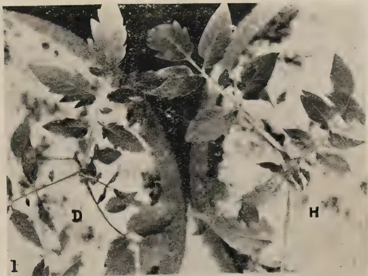
1
D
H
This black and white photograph shows a close-up of tomato leaves. The leaves exhibit significant curling and distortion, characteristic of damage from mites. Two specific areas are labeled with the letters 'D' and 'H'.
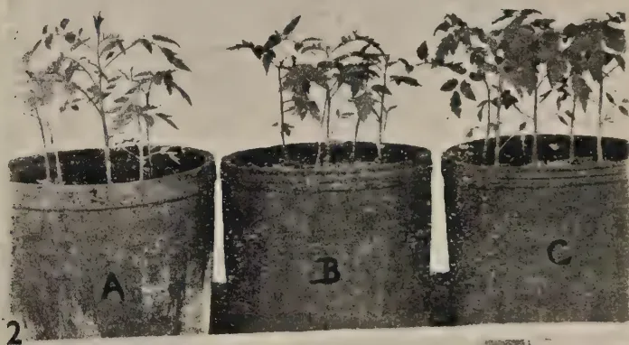
2
A
B
C
This photograph displays three tomato plants, each in its own pot, labeled A, B, and C. The plants show varying degrees of leaf curling and growth inhibition, likely due to mite infestation.
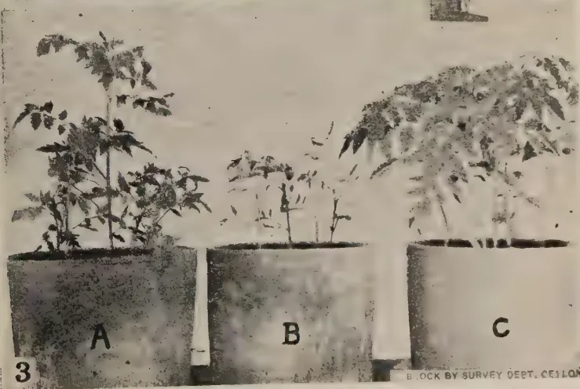
3
A
B
C
This photograph shows three tomato plants in pots, labeled A, B, and C. The plants exhibit different stages of leaf curling and growth, illustrating the progression of mite damage.
BLOCK BY SURVEY DEPT. Ceylon
PLATE 1.
Showing leaf curl of tomato caused by mites.
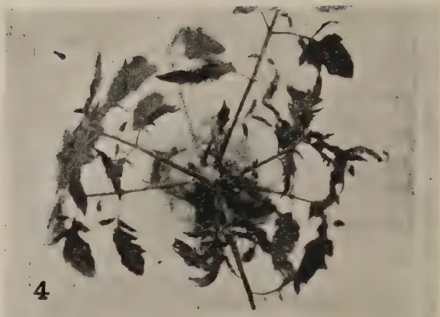
A black and white photograph of a tomato plant where the leaves are severely curled and distorted, a symptom of mite infestation. The plant is shown from a top-down perspective, with several stems and leaves visible.4
A close-up black and white photograph of a tomato leaf. The leaf surface is covered with numerous small, dark, circular spots, which are mites. The leaf appears slightly curled and distorted.5
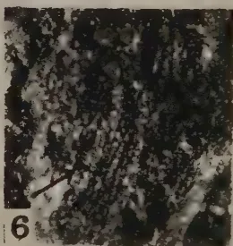
A close-up black and white photograph of a tomato leaf, similar to image 5, showing dense clusters of small mites on the leaf surface. The leaf is heavily textured with these small dark spots.6
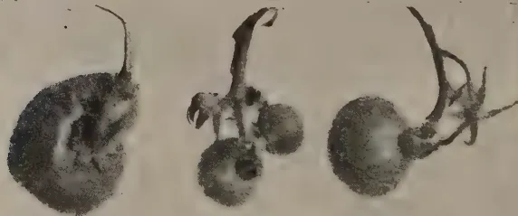
A black and white photograph showing three tomato fruits. The fruits are small and round, with some showing signs of mite damage, including surface irregularities and discoloration. They are attached to short stems.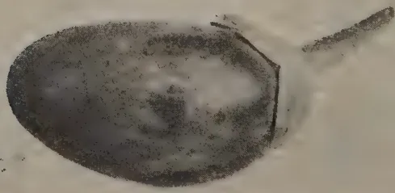
A black and white photograph of a single, large tomato fruit. The fruit is oval-shaped and shows significant mite damage, with a rough, bumpy surface texture and some areas of discoloration. It is attached to a short stem.7
BLOCK BY SURVEY DEPT. CEYLON.
PLATE 2.
Showing leaf curl of tomato caused by mites.
results in the die-back of the plant. This is easily controlled by spraying or dusting with sulphur preparations. The other type is caused by a virus (unpublished) and is distinguished by the abaxial (upward) curling and interveinal yellowing of leaflets and is hardly known to cause the death of the plant. This disease is not amenable to treatment of the affected plants with sprays or dusts and the diseased plants must be rogued out as early as possible lest they become a source of infection to other plants.
The writer's thanks are due to Dr. B. A. Baptist, Entomologist, and Mr. L. S. Bertus, Acting Plant Pathologist, Department of Agriculture, for valuable suggestions in the preparation of this paper.
Fig. 1. Apices from a diseased (D) and healthy (H) tomato plants from pots B and C respectively.
Fig. 2. Pots A, B and C nine days after the inoculation of the plants in A and B with mites. C is the uninoculated control.
Fig. 3. Pots A and B a fortnight after spraying the plants in A with a sulphur spray.
Fig. 4. Apex of shoot of tomato plant naturally infected with leaf curl disease.
Fig. 5. Mites on tomato leaflet (X 29).
Fig. 6. Eggs of mites (X 29).
Fig. 7. Russeting of fruits of tomato and brinjal caused by mites.
2028. From the point of view of adequate human nutrition a standard of living based on a full diet of rice is low. It is suggested that self-sufficiency should not be based on a lower standard—such as a sweetpotato or cassava standard. Although every subsidiary kind of produce may be allowed to supplement the staple food, self-sufficiency must aim at the production of enough rice to provide the required number of full meals to the rice eating population.
29. With a population of 37½ millions and an estimated acreage of 8,256,000 of rich easily worked volcanic soil under paddy cultivation Java is almost self supporting, its annual import of rice being about 6 Kg. per head of the population against Ceylon's corresponding figure of 84 Kg. Java's figures for absolute self-sufficiency work out roughly at one quarter of an acre of some of the best tropical soil under paddy for each inhabitant. On the same scale of productivity and consumption Ceylon with its 5,640,000 inhabitants must have 1,410,000 acres under paddy. But Java's production of other food crops per head is much greater than Ceylon's and even at present Ceylon consumes more rice per head than Java. It must be further remembered that, even with a larger per capita consumption of rice, at present a fair proportion of the population of Ceylon goes underfed. Therefore the present imports of rice with some slight weightage on account of present under consumption by a section of the population would form a sounder basis for estimating Ceylon's requirements than the figures in respect of Java.
30. At present Ceylon imports the equivalent of 37,000,000 bushels of paddy. It is suggested that in order to feed the present population without provision for the high annual increase adequately about 40,000,000 bushels of paddy must be raised on new lands. On a basis of 40 bushels per acre, which is an average which Ceylon must aim at reaching and which, it is believed, can be reached without much difficulty with a fairly well regulated water supply the new acreage required would be about 1 million. Therefore there are two lines of progress that must be followed :
31. With regard to the new land, it is necessary to find the land first, and then to find the people to cultivate it. It has been already stated that to create an efficient rice growing peasantry it is necessary to provide mixed farms under perennial irrigation in which the peasant will live, have his livestock, and grow not only rice but also other crops, and that irrigated fodder must be allowed at the rate of about 100 acres for every 1,000 acres of paddy. The provision of separate areas for fodder, paddy, and dry land cultivation is both impracticable and undesirable—impracticable because the area of land required would be greater than there is any reasonable hope of providing, and undesirable because a rotation of paddy with other crops would produce better results than their independent cultivation in separate blocks. It is impossible to lay down any uniform system of rotation because the crops grown must vary with varying conditions of soil and drainage and also because neither the Department of Agriculture nor private farmers have any experience of this kind of rotation. Nor would there be any use in a rigid definition of a rotation because it would not be possible to enforce it. The practice of rotation, the selection of crops and their sequence must be left to be worked out by the farmers. It is however suggested that if a farm has 7 acres 1 acre may be used for house,
21cattle shed, garden, patch of plantains, &c., 1 acre for pasture for the purpose of soil rejuvenation, 1 acre for fodder for the dual purpose of soil rejuvenation and producing cattle food, acres cultivated with paddy every season, and acres cultivated with other crops each season. This means that 7 acres of irrigable land will produce 5 acres of paddy in a year and that 1,400,000 acres of irrigable land are required to give 1 million acres of paddy a year. Perhaps when allowance is made for roads, channels, and other reservations, the gross irrigable area that is required may rise to million acres or more.
32. In the first instance it is necessary to look for this land in the undeveloped dry zone, and it has to be provided not by any extension of the present system of basin irrigation, both because of the difficulty of irrigating such a large area by that system and also because of the uncertainty of supply under that system, but by the creation of perennial reservoir irrigation. If the country seriously and definitely adopts the policy of self-sufficiency with regard to its rice supply this acreage of irrigable land must be found, and the Department of Irrigation must be asked to survey all the larger units of water supply in the dry zone and to formulate schemes. In his presidential address to the Engineering Association last year the Director of Irrigation expressed his conviction—adding in parenthesis that he could speak with some authority on the subject—that the construction of enormous reservoirs for controlling and conserving Ceylon's abundantly recurring supplies of rain which would command sufficient land in this zone to produce the whole of the country's requirements of rice was a practical proposition. If, however, a more detailed examination of the problem reveals that the dry zone cannot provide millions of acres of land under perennial irrigation the self-sufficiency policy must be proportionately abrogated, or, in the alternative, areas in the wet zone must be tapped by the retirement of large areas from other forms of cultivation and from human habitation. For instance, it may be found possible to conserve a large part of the flow off of the Mahaoya and irrigate large areas at present under coconut cultivation on either side of it; and for this purpose much tea land below Dolosbage may have to be submerged in a large reservoir, but these are matters for the irrigation engineer. He must find million acres of new land under perennial irrigation, and in so far as he fails, the policy of self-sufficiency fails. It must not be forgotten that these million acres provide only for the existing population. A further progressively increasing acreage must be found for the annual increase of 71,800 in the population, or this increase itself must be checked.
33. To work efficiently a peasant farm of the size suggested in paragraph 31, an average family of not less than five is required, the two parents and one child being energetic workers while the other two children may be either too small to work, or can only make a very small contribution. Therefore to work the 200,000 farms of 7 acres each a population of 1 million consisting of standard families would be required. But the standard family cannot be expected in more than 60 per cent. cases, and it will be necessary to have dependent adult relations to take the place of young mothers with only young children. To make provision for these requirements, the population required for the new area may be estimated at 1,200,000. The population of Ceylon is 4,800,000 inhabitants when the immigrant labour on estates is not taken into consideration. Not less than 25 per cent. of this population must be moved from their present homes to land under the new irrigation schemes. It is likely that larger units than 7 acres each may be worked by a family under a system of centralized large scale operation where machinery can be used in the manner described in paragraph 21. Or large capitalist farms in which human labour plays only a small part may spring up. In any event there must be a movement of population on an extensive scale. Is it possible to find the people?
The first search for the immigrants to the new lands must be made amongst the present rural population and a very cursory investigation of the problem will reveal that in the fully developed wet zone there is a large surplus population over and above what the land can carry. This situation has arisen from the operation of the evil system of inheritance which obtains in the country. Reference has already been made in paragraph 15 to the influence of this system in lowering the standard of cultivation. Bad economy of human material is an even more unfortunate product of this system. Its chief features are:
They follow from the law of inheritance which requires the equal division amongst the heirs of all the assets of a deceased's estate. In these conditions there is no incentive to effort
22and no desire to improve lands. Some of the fragmentary holdings are neglected or much energy is wasted by the peasant in trying to keep under cultivation at the same time small bits of land situated at some distance from each other. Above all men are tied down to small holdings or undivided shares of small holdings which are probably only a small fraction of what is required to support a family while they and their dependents cannot find profitable occupation to employ themselves when they are not engaged in cultivating uneconomic holdings. The Department of Agriculture can only indicate what changes are necessary. It is not possible here to examine the methods that should be adopted to secure these changes, which should aim at :
34. The application of these principles to paddy lands only will not cause the necessary movement of population. The absence of a proper relationship between population and land, and the frittering away of human effort in the mere exercise of ownership apply equally to high land. Uneconomic holdings of high land is even a more potent force in holding people tied, half starved, to their places of birth, than similar holdings of paddy lands. The main difficulty in the redistribution of units of high land is the difficulty of defining an economic unit in rural areas. The land may be only the site of a house of a man who lives by wage earning or by subsidiary occupations. The writer is unable to suggest a solution of a problem which is sufficiently complicated and sufficiently important to justify the appointment of a special commission, which must not be left in any doubt regarding the intention of Government to move out all surplus population—surplus in the sense that the land cannot support them—and to prevent a similar problem of over-population of rural areas from re-emerging. The Committee's duty will be only to recommend the best and most practicable scheme to give effect to this intention.
35. It is not suggested that it is easy, or even practicable at all, to bring about these revolutionary changes in an ancient system : but it is difficult to believe that a race of people who accepted and readily adapted themselves to the Roman-Dutch Law of property should not now accept another change. The important point is that we must face the fact that if these changes are not introduced it is impossible to make Ceylon self-supporting. It stands to reason that when 10 families cultivate the land that is enough to supply the food and engage the labour of one family and spend a good deal of their surplus time and energy in quarrelling over the land and its possession, the country cannot produce its own food ; and if Government is not prepared to introduce these changes, it must turn its face away from the policy of self-sufficiency.
36. It is hoped that when individually held economic units have been created in the densely populated parts of the country and sub-division and undivided ownership are rendered impossible, the surplus population will spread into those areas in which new lands are awaiting development. But it may be found that only partial success will be obtained by these methods, and that a large fraction of the population will continue to live in or near their present homes in a condition of parasitism either on their relations or on the general community. In that case the most relentless application of appropriate vagrancy laws must aim at driving to the new areas every person who does not earn a living for himself and his family by a recognized form of occupation.
37. The system of education is another factor which creates parasitism and will continue to keep people away from the land even when by the artificial fixation of prices agriculture is made more attractive than it is at present. But the weak point in the system is not, as is generally believed, too much English but too little English. Those who think that in modern times, when the subject comes into contact with the administration at so many points, the court language—that is to say the language in which
23the business of Government is conducted—can be permanently divorced from the language of the people, and that the mass of the people will be content to be excluded from immediate participation in the business of Government, do not have sympathy, understanding or imagination, and it would be futile to deny that to-day a knowledge of English gives a man a stamp of distinction—a very coveted distinction from his fellows. It is only those who already enjoy this distinction and the opportunities afforded by it and who would make any sacrifice to assure the same opportunities to their children that would deny that this distinction is coveted or contend that it should not be coveted. They are either intellectually dishonest or directly untruthful. The springs of human motive being what they fundamentally are, every parent will hanker after an English education, and the kind of employment to which that education provides the key for his children. For this purpose they will fritter away their resources which may be turned to more profitable channels. We must accept this as a basic fact and modify our policy accordingly and not deny its existence or try to stem an irresistible tide by speeches on school prize days or by artificial restrictions. The only remedy is to make the court language the medium of elementary education throughout the country. The country must face the proposition that so long as it refuses to acknowledge this primary truth, it must put up with an enormous wastage of human effort and wealth leading in the main to disappointment and disillusionment. If the change is introduced the people will cultivate a truer perspective and a very large fraction of barren endeavour which at present occupies them will be eliminated. The population available for agriculture will improve both in numbers and in quality.
38. When the measures suggested in the preceding paragraphs make the labour and enterprise required for extension of cultivation available, it is necessary to secure an improvement in the standard of cultivation of the paddy lands that are held in exclusive ownership of economic units—even if this can be done only by interference with the rights of private ownership. The first important step is to recognize without reserve that if we regard self-sufficiency with regard to food to be of vital national importance land cultivable with paddy falls into the same class of national assets as the country's harbour, or its rivers, or even its very air. Its fullest utilization for the cultivation of paddy must take precedence over all other considerations: and private ownership or private possession is of no service to the country except in so far as they help to secure economic exploitation: and, while private ownership should be encouraged where through it the largest amount of paddy can be produced, when it stands in the way of the fullest use of the land, the private owner must be expropriated. Although this proposition is so obviously axiomatic, so many people refuse to face it, that its truth may be illustrated by an analogy. If it is accepted that the full utilization of every berth in the harbour is necessary for the commercial life of the country, it would be absurd for the harbour authorities to allow a rich man to buy up half a dozen berths and to allow them to lie vacant over long periods or to charge a rent from ship-owners that discourage them from using them. Such a situation cannot be contemplated. Similarly if the production of Ceylon's paddy requirement is necessary for the national life and this can be done only by the fullest utilization of all the cultivable land, the State cannot allow considerations of proprietary rights to allow land to remain uncultivated, to be inadequately cultivated, or to be directed to other uses which are of secondary importance only.
39. To secure adequate cultivation it is necessary to define the legitimate concessions that may be made to the right of ownership. It is suggested that they are—
The tenancy based on the delivery of a share of produce as rent should be abolished by law. There can be no objection to payment of wages in kind, provided it is not a share but a fixed quantity of produce.
40. The problem of increasing the yield may be examined against this background of economic holdings, and defined rights of ownership. The agricultural practices that would produce this result are the same as those that were enumerated in the 15th paragraph of this
24note, but now an increased yield becomes the concern of the State and not of the individual cultivator, and therefore the State must enforce the adoption of these practices within reasonable measure : enforcement implies sanctions : the only just sanction is the release of the individual from his responsibility of ownership if he does not or is unable to discharge this responsibility. In other words, after the State has, by price stabilization and, when no facilities for sale of paddy exist, by direct purchase from the grower at an economic price, made it profitable for a field owner to adopt a certain standard of cultivation, it should take over lands which do not receive that standard of cultivation. We have first to lay down the standard, and then provide the machinery for its enforcement.
41. While some agricultural practices may be universal others are necessarily regional, or even positional. The following standard is suggested :
42. To facilitate the enforcement of such regulations without much hardship to the cultivator Government must :
43. A selection which are suitable and popular have been made for the larger part of the dry zone—Vellai Illankalayan as a four months' paddy and Pachchaiperumal as a three months' paddy. The Department will in due course make selections for other areas and investigate the possibility and advisability of substituting a long aged variety so as to enable one crop of paddy to be taken in a year from fields suitable for long aged paddy.
Quick results must not be expected in selection. Broadly speaking, on the assumption that there is no failure or shortage of rainfall in any year, to select a variety and to provide enough seed of that variety to sow 10 acres it takes 9 years.
2544. The provision of seed stations has been already discussed in section A. Roughly 375,000 bushels of seed paddy will have to be raised annually. On an average yield of 40 bushels per acre this means that 94 farms of 100 acres each would be required to provide new seed to each farm every 8th year. It is advisable to make this every 5th year, but the magnitude of the work will be too enormous. An administrative difficulty of some considerable importance may be mentioned here. The best method of describing this difficulty is to quote an individual case as an illustration. The Government has a paddy seed farm at Ambalantota. The average yield of paddy at this station is 30 bushels per acre. It is believed that application and industry can raise this yield to something near 50 bushels by continued effort and application of one man for a number of years—in the same manner that a farmer would build up his soil. This requires that one man should be in charge of the station for 15 to 20 years with no other pre-occupation, with his continued employment in the Department depending upon the rate at which he effects the required improvement. Since the present Director of Agriculture assumed duties in March, 1936, there have been 6 officers in charge of this station. One of them was transferred as the Fumigatorium officer because he was the man most suitable for that office. Another was discontinued for dishonesty; yet another was on sick leave for 4 months of his total of 11 months at the station and would not take his family there: he had to be moved. A fourth lacked experience and got into trouble with the labour force. Others were temporary officers holding charge of the station till the Department could find a more suitable man. The field is no better to-day than it was three years ago: no improvement can be effected without the sustained attention of one directing mind; and this cannot be obtained with these frequent changes of officers. These changes cannot be avoided with a transferable service of Agricultural Instructors. All on the same scale of salary. It is impossible to appoint a member of such a service to be in charge of, say, a paddy station at Okkampitiya and keep him there while another member would be at Peradeniya, or Labuduwu or Nugegoda. If he cannot get away in any other manner he will 'play up' with inefficient work and medical certificates. A service like that would be good enough for instance in the Post Office or Medical Department, in which a change of officers cannot affect the work seriously. A new postmaster can begin delivering letters and a new medical officer can begin prescribing quite as efficiently as his predecessor within five minutes of his assumption of duties. An Agricultural Officer in charge of a paddy station cannot be of much use unless he is in the station about 15 years at least. Therefore it is very necessary that a system of individual posts, each post carrying its own salary, should take the place of a uniform transferable service.
45. It is not proposed to discuss here the methods by which credit facilities should be provided. The following will be the requirements of a farm of 7 acres growing 5 acres paddy annually, it being presumed that the field has been already brought into arable condition:
| Rs. | |
|---|---|
| Buffaloes—1 pair .. .. . | 60 |
| She-buffaloes—2 .. .. . | 60 |
| Ploughs—1 light iron plough .. .. . | 5 |
| Burmese harrow—1 .. .. . | 3 |
| Mamoties—4 .. .. . | 4 |
| Harvesting knives—5 .. .. . | 3 |
| Gunny bags—40 .. .. . | 6 |
| Lanterns—2 .. .. . | 4 |
| Contingencies .. .. . | 5 |
| 150 | |
| Add manures .. .. . | 50 |
| 200 |
46. A very large organization is required to put a plan of development into operation and to maintain it by State assistance and encouragement until the production of rice as an article of commerce and not as an article of food for personal consumption becomes established. In matters like this half measures, and vacillating policy are wasteful and ineffective—only a determined and unrelaxing application of all the resources of the State during a fixed period will yield any useful results. Therefore, the organization must be thorough and efficient. The following arrangements are suggested.
2647. The immediate administration of the regulations for rice cultivation and the administration of Government assistance must be entrusted to paid petty officers corresponding to the present Vel-Vidanes. They may go by any other name but for convenience of description they will be called Vel-Vidanes hereafter in this note. They must be appointed in sufficiently large numbers to cover the whole area brought under the plan and the area under the administration of each Vel-Vidane must be sufficiently small and compact to allow intensive attention. The work of the Vel-Vidanes will have to be supervised by a number of sub-officers of a superior type—young university graduates with some training in agriculture are suggested. There must be one of them for each chief headman's division—town gravets and other agriculturally unimportant divisions being amalgamated with adjacent divisions. These sub-officers will be under the direct control of the Agricultural Officers—or of the Government Agents.
48. It has been already suggested in Section A that for the purpose of introducing mechanized agriculture on a large scale into the Island two large farms should be established. The same arrangement is necessary for the objects contemplated under this section; in fact instead of a couple of farms which should form demonstration and educational centres, such large farms under the management of the State may have to become a normal feature of paddy agriculture under the tanks in the malarial area in a self-sufficiency programme if private enterprise is not forthcoming. These farms should form the centres of education for the Vel-Vidanes and their supervising officers. Every one of them should have one year's practical training at one of these farms and a season in another farm consisting of three to five acre holdings controlled by the State before they assume duties.
49. Planned food production must be based on periodical surveys. At present there is no machinery for making such surveys. It is suggested that a new branch of the Department should be created—a branch of agricultural economics. The functions of the branch would be :
50. Rural indebtedness is a factor which undermines both the industry and the sense of stability of the farmer. It is the fashion to believe, or rather to pretend to believe, that this indebtedness is the result, at least to some considerable extent, of borrowing for agricultural purposes. This is almost wholly untrue in the case of the peasant, and largely untrue in the case of the Ceylonese capitalist. On the contrary this borrowing is neither intended nor calculated to increase the production of wealth. Generally, the cause is improvidence, love of display, provision of dowries, litigation, want of reserve funds to meet a sudden call such as that of illness, and, very largely, a desire to enlarge holdings in land without any regard either to the full exploitation of the land already in the possession of the borrower or to his capacity to develop his new purchase. It is believed that if all this borrowing is stopped at once the country will not be any poorer, and the agricultural activities of the people of the country will not be adversely affected except in a negligible degree. On the other hand, the stoppage of this habit of easy borrowing will release for productive investment a large amount of fluid capital which is now utilized only for exploiting the misfortunes of others, and the owners of that capital will go out of their villages to the undeveloped areas in search of means of profitably employing it, while freedom from debt will give stability to rural life. It will also incidentally minimize a number of social evils such as improvidence, display, and large dowries which are dissipated by the recipient. In a few cases the opportunities of relieving immediate distress by an unredemable mortgage of the future will follow from a stoppage of this form of credit : but this will be reduced to a minimum by regular habits of industry and may be suffered for the good of the race. It is suggested that forced sales of agricultural land, whether on secured or unsecured debts,
27should be prohibited by law, as well as usufructuary mortgages and long term leases of agricultural land. Transitional arrangements of an equitable nature may be made with regard to existing debts, and the State may, if it likes, although it does not form part of the problem of food production in the future, frame a scheme for buying back agricultural lands which went into the hands of foreign money lenders in the last 10 or 15 years and settling peasants on them.
51. The following is a summary of the recommendations based on the above considerations to make Ceylon self supporting with regard to its food supply within a reasonable period of time, say 30 years. Most of these recommendations are the same as those made under Section A but are reproduced for easy reference.
This work must be systematic and exhaustive. In other words the work must be undertaken with the definite intention of covering the whole country and of leaving nothing undone in any district which may be usefully done. Therefore steady progress must be maintained starting from one point and all political and other consideration demanding simultaneous attention in all districts or in all electoral areas must be ignored.
(22) Action must be taken in co-operation with the Colombo Municipality to keep the number of buffaloes slaughtered annually below 5,000. This will provide a sufficient outlet for agriculturally useless buffaloes. Only buffaloes certified by the paid Vel-Vidanes under these proposals to be agriculturally useless should be allowed to be slaughtered.
(23) Government should also maintain cattle—chiefly buffaloes—breeding centres under these schemes both to serve as a demonstration of the care of animals and also to provide replacement stock for the settlers.
(24) In colonizing new areas under major irrigation works instead of leaving it to the peasant to bring his land gradually under the plough and granting him subsidies Government should settle him in a ready made farm with house, implements and livestock complete and recover in the form of an enhanced rent that part of the cost which it is not proposed to grant as a subsidy. For this purpose Government may employ the selected colonists as paid labourers for opening up the whole of the area to be colonized and the colonist settled on the land after the work is completed.
(25) Unless there is immediate and adequate demand from peasants for the whole of the new area, which is very unlikely, land under these schemes must be freely allotted for capitalistic exploitation solely in paddy, or in paddy in rotation with other economic crops—economic food crops being given preference.
(26) A board of paddy experiments should be created for the control of all experiments with paddy. This board will submit annual estimates to the State Council quite independent of all other votes of the Department of Agriculture. Two experimental stations should be established where all major paddy experiments would be conducted—one in the dry zone not less than 100 acres in extent : the other in the wet zone of about 50 acres. Each station should be in charge of a Director and should have three branches : Botany, Chemistry and Agriculture. The head of the agricultural branch will also be the Director.
(27) If the creation of economic holdings and the revision of the laws of inheritance suggested under heads 5 and 6 above do not induce an adequate movement of population from the overcrowded areas to the new areas that are provided with perennial irrigation, vagrancy laws must be passed and strictly enforced giving the State the right to control the movements of those who do not support themselves and their families by a recognized form of employment.
(28) The sale of agricultural lands under decree of court even on secured debts should be prohibited as well as usufructuary mortgage and long term lease of lands.
(29) To prevent dissipation of effort and parasitism the educational system of the country must be reorganized so as to give every child free elementary education in the language in which the business of Government and commerce is conducted in the country.
(30) In the case of paddy lands, a standard of cultivation must be prescribed. Tenure on a share basis must be abolished by law, and the owner required to cultivate his lands according to the prescribed standard with his own labour and that of his family, or by the employment of wage earning labour.
(31) Paddy land which is not cultivated already to the prescribed standard should be taken over by the State to be allotted for cultivation by others.
(32) For the purpose of supervising rice cultivation so as to ensure a proper standard of cultivation special staff should be created, consisting of Divisional Officers in charge of a unit more or less corresponding to a Chief Headman's division and paid petty officers more or less of the standing of Vel-Vidanes.
(33) The departmental agricultural service must be reorganized so as to create special stations to which a man would be appointed permanently.
52. It has been already stated that with a few exceptions the recommendations made above are the same as those that were made in Section A. Evolutionary progress. The difference is that whereas in connexion with evolutionary progress the rate of change would be determined by the rate at which Government is able and willing to release money, in the case of the
30achievement of self sufficiency within a fixed time the policy and rate of achievement is determined, and Government must be prepared to provide all the money that is necessary as fast as it can be properly spent in the furtherance of that policy.
53. It cannot be over emphasized that these proposals are advanced not because they are believed to be easy, or consistent with current ideas or even just or within the economic capacity of the country or to produce an increase in human well-being commensurate with the colossal sums of money that are required or with the equally colossal effort, but because these proposals appear to the writer to describe the only methods that can secure self-sufficiency. He only suggests that if we want self-sufficiency we must shoulder this burden. He only suggests that if you want to eat the fish you must catch it. He is not concerned in the ethics of fish catching or in your willingness to catch the fish for the satisfaction of eating it.
54. There is one alternative to the methods of indirect coercion and subsidy outlined above which may succeed, or go far towards success in providing large quantities of rice if the country is prepared to adopt it. This method requires action by Government only in three directions :—
55. Perhaps it would not be inequitable to compel the capitalist to carry a direct share of the burden of self-sufficiency. The obvious method in which he could do would be to grow a certain prescribed quantity of paddy or to bring a prescribed area under the crop where the State makes the land available to him. What is not so obvious is the definition of a capitalist. This difficulty is so great that as a matter of expedience the application of the suggestion made in this paragraph may be restricted to the owners of lands only. In very bare outline the proposal is this. The standard number of permanent labourers required for maintaining an acre of land in any crop at a reasonable level of efficient cultivation will be laid down. This may be regarded as—
| 1.00 | labourer | per acre | of tea. |
| .37 | " | " | of rubber. |
| .20 | " | " | of coconuts. |
Similar figures may be laid down after investigation for other crops. Every owner, whether individual or corporate of an estate or a group of estates aggregating 25 acres or more should be required to cultivate with paddy an area of land calculated at the rate of acres of land for every standard labour force of 100. Or the area of paddy which the proprietor of an estate
31is required to grow may be fixed on an average basis—say, 30 acres for every 100 acres of his estate. Perhaps the latter arrangement would be more equitable and easier to enforce. In practice there is no doubt that a number of proprietors will combine to open a paddy farm which will be equal to the aggregate of their respective quotas.
The chief difficulty in enforcing compulsory food production by the capitalist in this manner would be the scarcity of labour. It may be regarded as axiomatic that only Ceylonese labour will be allowed to be employed in this work—or, at all events no fresh recruitment of Indian labour for this purpose would be permitted. With this limitation it would not be just to penalize the capitalist for failure to grow food, if Ceylon labour does not move to the area in which land is available. Therefore provision must be made for exemption of those capitalists who prove to the satisfaction of a special tribunal that they offered reasonable terms to labour, but that labour was not available.
56. Self-sufficiency in food implies the production of all the necessaries. One of the largest single items of food is sugar. This commodity may be manufactured from sweet toddy of any palm but the cost would be very high. Whether that cost would be such as to cause a considerable reduction in consumption it is not possible to say. Perhaps 20 cents a pound for ordinary sugar obtained behind a tariff wall would not cause much hardship to the people. There is no one in Ceylon who has had practical experience of commercial sugar manufacture. The best course appears to be to engage an experienced man from India or other part of the world to establish a large sugar factory or a number of factories in Ceylon, to work with palmyrah and coconut toddy as the basis, if after preliminary investigation he thinks that it can be produced at a cost which will enable the retail price to be fixed at 20 cents a pound. The agricultural Department is unable to put up an estimate of probable cost.
57. In the meantime the Department of Agriculture has resuscitated the varietal trials of sugar cane in the Eastern Province, and it is hoped to be able to select a variety which was thrive in Ceylon and yield a high percentage of sugar in 3 or 4 years. As soon as these trials are completed, or even earlier Government may offer land concessions to capitalistic companies for the establishment of a sugar growing and manufacturing industry, with the assurance of the local market at 20 cents a pound retail. If no capitalists come forward the State should launch a scheme of its own. It is not proposed to work out details of a scheme now—but some method of work similar to the suggestions made in paragraph 20 for working paddy lands in partnership between the capitalistic organizations and peasants appears to be the best. If these proposals are adopted it will be necessary to import advisers to work the scheme in the first instance. It is felt that sending young men out to be trained abroad in the first instance would not secure good results. It is better to train young men locally and then send them abroad to gain larger experience. If a private company is prepared to undertake this work, installing their own irrigation scheme, a concessionaire may be found, at once. If private enterprise is not forthcoming Government action to establish the crop must await the provision of perennial irrigation. It may even be possible and profitable to enlarge the total area in which rice is grown and grow sugar cane in rotation with rice. To produce the whole of Ceylon's annual consumption of sugar an area ranging between 25,000 and 30,000 acres must be in cane continuously. If sugar is grown in rotation with rice, all that is necessary, is to add 30,000 acres to the area of perennial irrigation provided under the recommendation of this note.
58. Chillies, onions and other curry stuffs as well as the non-perishable vegetables that are at present imported such as dhal and green gram cannot form the object of a comprehensive plan, but they should receive the same attention as was proposed for them in Section A in a more sustained form. If self-sufficiency is desired Government must be prepared to spend more money. In particular the dry farm experiment station suggested in paragraph 20 must be established immediately and the Botanist and Agronomist must be allowed to be somewhat free in the expenditure of money in trying to establish crops on an economic scale. As an illustration of what is intended it may be stated that the Department of Agriculture is now making an attempt to introduce regular dhal cultivation to the country. Sixty acres are being planted in dhal this year. This crop might fail owing to the unsuitability of the climatic or soil conditions in the area for large scale production or owing to our ignorance of the methods of cultivation. It may turn out that owing to some defect in the soil the grains do not develop exactly in the manner which enable them to be treated for the market: and eventually the peasants might not take to this cultivation. None the less the attempt must be made and Government must not hesitate to incur the expenditure even with the possibility of the results being negative.
2—J. N. A 36777 (4/44) 3259. In this connection it would be useful to import to Ceylon about half a dozen Indian families who are accustomed to intensive garden cultivation with a variety of crops and to ask them to work a small farm each in the dry zone to serve as a model. It would be a matter of Government policy whether these families should be invited to settle down here permanently or should come on agreement to go back after, say 15 years, with a generous gratuity that would enable them to re-establish themselves in their country. Perhaps this would be the shortest method of carrying out many trials we have in mind.
60. Livestock has been so far treated only as auxiliary to crop production. But its importance as a direct source of food supply is even now not inconsiderable. But experts miss no opportunity of repeating that from the point of view of the adequate nutrition of the people animal products must find a very much larger place in the dietary. It must become a major aim of Government policy to raise the consumption of these products by the masses. The demand for these will probably raise naturally with the diffusion of prosperity that will follow the adoption of a scheme of subsidized food production. It is necessary to develop animal husbandry to meet this increase of demand. Ceylon's self-sufficiency with regard to its food supply was not the direct object of the proposals contained in Sessional Paper No. 5 of 1938. If the proposals had been drafted with that object in view, a definite programme for the early adoption and execution of the measures proposed in it would have been submitted. The only suggestion that can be made here is that Government should proceed to examine these proposals without delay, approve them, give instructions to the Department of Agriculture to carry them out and provide funds to the utmost capacity of the Department to utilize them economically in carrying out the proposals. It would perhaps be useful to repeat here what was emphatically stated in the Sessional Paper under reference that this country suffers from great poverty of knowledge and experience in sound stock rearing. The average man has no tradition of cattle breeding, or cattle rearing. The average man does not become an expert in either the art or the science of this branch of agriculture on mere appointment to be an Agricultural Instructor or an Assistant Veterinary Surgeon. We must give these officers a very sound training if they are to be useful to the country: and that training has to be given abroad. The Indian training is good as far as it goes, but its scope is limited. They must go to countries in which intensive farms of animal husbandry in all its branches are carried out.
61. The country's experience with regard to the restriction of the importation of cattle and goats for slaughter, of eggs and of live poultry show that there are some directions in which legislation can make Ceylon depend on its own resources without serious dislocation of the economic life of the people. A certain quantity of frozen poultry is now imported to the country. Although the item is small, the possibility of reserving this trade for Ceylon may be considered in view of the very low prices that the producer now gets for his poultry. It is reasonable to assume that frozen poultry is imported not because poultry is scarce in Ceylon, but because the imported article is superior in quality, and there is a clientele that is prepared to pay for the luxury of quality. Rapid advance has been made in the country in the last few years in commercial poultry keeping, and it is believed that if only a market is assured there are now people in Ceylon who would produce poultry of special quality. It is suggested that a prohibitive duty should be imposed on imported killed poultry after about 18 months' notice. That period would be sufficient for would-be producers to enter into contracts with the present importers and to adapt their poultry rearing to the special requirements of the select clientele. These remarks apply to ducks and other domestic fowl. Similar considerations apply to beef and pork. Pork of good quality can be produced very easily, and there is no reason why all cold-storage sales should not be restricted to locally produced pork. But the demand itself would dry up unless the dealer can guarantee that the pork is derived from pigs reared under special conditions. This can be easily secured by registering a few piggeries which may be under the supervision of the Department of Agriculture. A prohibitive duty may be enforced from a date commencing 18 months hence. The case of beef is more difficult. It will be a very long time hence, if ever, that Ceylon will be able to produce beef of quality that comes near the imported article; but here again, an assured small market will easily induce a few local farmers to take up fattening cattle for beef, and the necessary direct arrangements may be made between prospective producers and present importers. Perhaps five years' notice of the imposition of an import duty calculated not to keep out the commodity altogether but to raise the price to a level at which only the staunchest devotee of quality will buy the imported article will be sufficient to create local supply of good beef.
3362. One other suggestion is made with some hesitation. One of the most convenient methods of introducing a little leaven of fat and protein in the mass of starch that the rice eating population of the country consumes is to introduce bacon into their diet. A thin rasher of bacon fried crisp and eaten with the rice will considerably enhance the nutrition value of the food; and it is exactly the kind of delicacy that will appeal to the rice eater. It will be in the same class as "Bombay duck" or "Diya Hakuru" or "Papdam". It is suggested that it would be an act of social service, in the same category as the feeding of school children, to launch a vigorous scheme to make the consumption of this commodity on a small scale a common practice in Ceylon. The scheme may be run at a sacrifice by Government. Pigs are easily reared in the country. If the proposal to attach a small pig farm to an animal husbandry school at Ambepussa is adopted, this pig farm may be made the nucleus of a bacon factory. The supply of the farm may be supplemented by purchase from registered pig owners who maintain a prescribed standard of pig rearing. There should be no difficulty in manufacturing bacon in this country. Smoking involves a skilled technique which can be easily learned. The only part of the process which would be affected by climatic conditions is the cooling; a good refrigerating plant will overcome this difficulty. In fact a Ceylon estate owner attempted the commercial manufacture of bacon. He did turn out a very good bacon, but the enterprise failed as soon as fairly large scale production was undertaken because the inadequacy of the cooling plant made it difficult to maintain quality. Sale for a number of years at an uneconomically cheap price, the addition of a small rasher to the free meal in schools to all children other than Muslim children, and an intensive Americanized propaganda campaign by our food experts might eventually make pig products a common food of the people, and a lucrative local industry might be created. This proposal is commended to the consideration of Government, not without some diffidence.
63. It is impossible to make any practicable proposals at this stage to produce locally 23 lakhs worth of milk and milk foods now imported to Ceylon. This problem must await the improvement of livestock after the recommendations of the Central Board of Agriculture have been carried out.
34THE information given in this article has been gathered from various sources with a view to meeting the requirements of Rhodesian farmers who may wish to cultivate this crop. At the present time the demand for the dried flowers is much greater than the supply, and the price being paid is in the neighbourhood of £100 per ton. In comparison with other "plantation" crops it may be quickly and cheaply established, and, if circumstances demand, it can be easily eradicated.
The insecticidal properties of the powdered flowers of the plant known to botanists as Chrysanthemum cinerariaefolium (syn. Pyrethrum cinerariaefolium) have been known for over a century. Until the later part of the nineteenth century, the islands in the Adriatic Sea and the adjacent mainland (known as Dalmatia) produced the greater part of the requirements of commerce, and it was marketed as Dalmatian powder or insect powder. The crop was found to thrive in Japan, and after the outbreak of the Great War production in that country was accelerated and it became the chief source of the world's supply. During the past decade its cultivation has rapidly increased in Kenya Colony, and at the present time it is one of the most remunerative crops grown there. Kenya flowers have earned a high reputation on the world's markets, largely through co-operation and the adoption of scientific methods of cultivation, preparation and marketing of uniformly high quality flowers.
Experience during recent years has shown that pyrethrum is an extremely adaptable crop. It has been grown successfully in the Union of South Africa at an altitude little above sea level, while in Kenya Colony near the equator, it grows well at altitudes as high as 10,000 feet above the sea. It has been successfully cultivated in England at a few feet above sea level and in places where it has to withstand several degrees of frost during the winter months without artificial protection. In the Adriatic Islands it is grown at altitudes below 3,000 feet; in some districts there are frequent heavy rains, while others are arid, and temperatures range from several degrees below freezing point to 90 degrees F., or even 110 degrees F. in certain areas. In its native habitat the soils are poor and calcareous, but in Kenya they give a slightly acid reaction. It is seen that pyrethrum can be grown under soil and climatic conditions which differ very widely. Reports indicate that nearly every farmer in Rhodesia might find it economical to grow a small area of half an acre or so, to provide material for use on his own farm.
The question therefore, is not "can pyrethrum be grown in Rhodesia?" but "can it be successfully cultivated on a commercial basis?" A number of factors such as climate, soil, labour supply, fuel supply, markets, &c., need to be considered.
Climate.—A temperate climate with a rainfall of 30 to 50 inches fairly evenly distributed throughout the year, but never failing in the late winter and spring months, would provide optimum conditions for this crop.
There are few areas in Southern Rhodesia where these optimum conditions are to be found, but the crops of flowers grown on "dry land" at the Salisbury Experimental Station
* By H. C. Arnold, Manager, Agricultural Experiment Station, in "The Rhodesia Agricultural Journal", Vol. XL., No. 4, July-August, 1944.
35show that pyrethrum can be grown under conditions widely different from those which are best suited to it. At this station most of the 30 in. to 34 in. rainfall is precipitated during the four summer months, December to March, and very little during the remainder of the year. In spite of these adverse climatic conditions yields at the rate of 80 lb. to 120 lb. per acre have been obtained from the experiment plots, and a patch which was planted out in the season 1936-37 is still yielding moderate quantities of flowers although it has never been supplied with any water by artificial means. These results indicate that although it will be found unprofitable to grow the crop for commercial purposes without facilities for irrigation where the climatic conditions are similar to those of Salisbury, it may be found advantageous to grow sufficient for the farm's requirements. It is considered that the strains of pyrethrum now in cultivation in Rhodesia are not suited for commercial plantings at altitudes lower than 4,500 feet, and higher levels are to be preferred.
In general, it may be said that irrigation is essential for success with commercial plantings, with the possible exception of certain small areas at a high level on the Eastern Border.
Soil.—Although in its natural habitat the soils are calcareous, giving an alkaline reaction, the soil of the Kenya highlands generally gives a slightly acid reaction. The crop may be successfully cultivated on a wide range of soil types provided they are well drained. Sites which become water-logged during the rainy season due to hard pan near the surface, and those which are lowlying should be avoided. In Kenya the highest yields have usually been obtained on soils classified as medium loams, which cultivate easily and are not heavily infested with weeds. The red, "contact," and fertile sandy loam soils in this Colony would be suitable.
Labour Supply.—Although the work of raising the seedlings and transplanting the resulting plants in the field requires fairly large numbers of labourers, the flower-picking period is the time when an adequate labour force is essential. In order that the value of the flowers may not be reduced, it is necessary to pick them when they reach the correct stage of maturity. The work cannot be postponed, and for that reason sufficient labourers must be within call of the grower. Women and children are able to do this part of the work, so farmers who can obtain such labour will be in a more favourable position for pyrethrum growing than others.
Fuel Supply.—When pyrethrum is grown on a small scale only, the flowers can be dried in open sheds and finished off in the sun, but when the crop is grown on large areas, means for drying the flowers quickly, in order to make room for the next picking, will be required. A structure somewhat similar to a tobacco barn is used in Kenya. Those farmers who have plenty of firewood would probably prefer to put the fresh flowers in the dryer as soon as they come from the field, but those who need to use their fuel sparingly could do the preliminary drying in sheds similar to those used for air-cured tobacco. In average seasons the open shed-cum-dryer system would give satisfactory results, but if rainy weather prevailed for several consecutive days the flowers would dry too slowly and congestion might occur, resulting in the loss of a part of the crop. It is thought that farmers who are unable to obtain fuel at low cost would not be likely to find it practicable to handle pyrethrum on a large scale.
Markets.—In pre-war days both America and England were buyers of large quantities of pyrethrum flowers at prices which fluctuated between £40 and £200 per ton of dried flowers. The position at the present time, is that flowers not required for use within our own borders must be marketed in the Union of South Africa, since suitable pressure baling machinery is not available in the Colony. With the present high shipping freights this is essential for export overseas. The principal buyers in the Union pay the same price for Rhodesian flowers as for Kenya flowers, on the basis of 1.3 per cent. pyrethrin content, and a proportionate reduction is made if the pyrethrin content falls below this.
36Importance of Strain.—The first sowings of pyrethrum at the Agricultural Experiment Station, Salisbury, were made in July, 1931, from seed obtained from the Director of the Plant Pathological Laboratory of the British Ministry of Agriculture. The resulting plants were transplanted at the beginning of the rainy season on land which could not be irrigated. Most of the plants grew very well and 40 per cent. to 50 per cent. of them produced moderate numbers of flowers in the following season. In the second season a smaller percentage of the plants flowered and only two per cent. flowered very freely. The remainder of the plants formed very healthy looking, deep green, non-flowering rosettes. Seed was saved from the plants which flowered freely, and strains which produce 90 per cent. of productive plants have now been established. It is apparent that those who wish to start pyrethrum growing must be careful to obtain strains suited to the locality in which the crop is to be cultivated. These free flowering strains have proved to be well suited for growing at the higher altitudes in this Colony particularly those in the Eastern Districts. Seed imported from Kenya Colony by one or two growers has also given satisfactory yields of flowers in those districts. It has been found that a large proportion of the non-flowering plants can be induced to become productive by splitting them up and transplanting them on another site.
The productivity of the stock can be improved by selecting plants which have desirable characteristics, splitting them up and transplanting them on a new area at a distance from the main fields. Pyrethrum flowers are self-sterile, and so to produce seed they need pollen from plants which are not closely related to themselves to effect fertilisation. For this reason, farmers should not attempt to establish "pure" lines by repeatedly splitting plants which appear superior to others and growing them in complete isolated patches. The most a farmer can do to increase the hereditary productivity of his stock is to select plants which are definitely superior to all the adjacent plants, remove them to an isolated field, and after "splitting" them into a number of sub-sivisions plant all these off-sets together in a row of their own. The rows containing the various families should not be wider than the normal distance apart, in order to facilitate cross pollination between the various strains. In the following season it may be found that certain of these strains are not better than the common stock, and any such should be removed. The seed produced by the superior plants should be used for establishing new plantations. Desirable hereditary characteristics are: resistance to disease; resistance to lodging; numerous flowers with large centres; erect habit of growth, and high pyrethrin content. Farmers are not equipped for determining the pyrethrin content of their flowers, but much can be done to improve the stock by propagation from plants possessing the other desirable features.
The site chosen should be one which is fairly free of weeds, particularly those which are perennial and have creeping under ground roots, e.g., couch grass; or bulbs, e.g., sorrel (oxalis). The land should be thoroughly ploughed about eight inches deep and rendered as weed-free as possible by cultivation, before the pyrethrum is planted. Contour ridges should be constructed if there is any likelihood of soil erosion taking place, and the rows of plants should follow the main general direction of the contour ridges.
Manurial Requirements.—No fertiliser or manurial trials have been made with pyrethrum at this station, but some of the "dry land" crop was dressed with 10 tons per acre of farmyard manure before planting, and it appeared to have a beneficial effect. Whether such dressings will increase the yield or not depends on the natural fertility of the soil. Properly prepared compost would be the best form of humus dressing to use on soils which are deficient in organic matter. On a small patch grown under irrigation at this station, applications of sulphate of ammonia seemed to increase the yield of flowers considerably. Lime or wood ashes would very probably be found to have a beneficial effect on acid soils. Dressings of phosphatic fertiliser should be tried on soil known to be deficient in phosphates.
37Seed Sowing.—The amount of seed required varies with the spacing adopted for the final stand and the viability of the seed. Various field-spacings are recommended ranging from 36 in. by 12 in. to 12 in. by 12 in., or 15,000 to 44,000 plants per acre. From lb. to 1 lb. of seed will usually provide sufficient plants for each acre finally established. It is advisable to make a germination test of the seed before sowing it. Tests of several lots of seed reaped at the Agricultural Experiment Station, Salisbury, have given a germination varying between 10 per cent. and 60 per cent. with an average of 30 per cent. to 40 per cent. and over 300,000 seeds per lb. The seed should be sown at a rate calculated to provide a plant on every four to six square inches of seed bed. Each ounce of seed will usually have sufficient viable seed to cover 8 to 12 square yards of seed bed. The production of sturdy transplants should be aimed at because such plants are able to withstand the shock of transplantation better than weakly plantlets which have been overcrowded in the nursery beds. The best time to sow will depend on the other operations of the farm. Usually, the seed should be sown from three to four months before the time anticipated to be the most convenient for setting out the transplants in the field. Hence farmers who wish to plant out their pyrethrum soon after the first rains fall, should sow the seed in August and September.
Pyrethrum seed should be sown in nursery beds similar to those used for tobacco or tree seedlings. The site should be well drained, and preferably somewhat sandy. It is advisable to sterilise the soil by burning brushwood over it after the manner usual for tobacco seed beds. The surface should be slightly higher than the paths and be fine and level. A half-inch layer of wood ash from the burnt brushwood will supply potash and do much to neutralise the acidity of the soil which, when necessary, should also be enriched by application of suitable complete fertilisers. The beds should be protected from the drying effects of the wind by grass screens or other suitable material, and grass or hessian should be used for shading the beds from the sun.
After burning, the beds may be dressed with sifted well-rotted compost at the rate of one to one and a half petrol tin-fulls per 10 square yards of seed bed. This should be forked into the soil to a depth of three inches, and will assist germination of the seed and the sturdy growth of the plants.
The seed germinates slowly and unevenly. The first seedlings appear about seven days after sowing and the majority within 14 days after the first. The required amount of seeds should be scattered evenly over the surface of the beds and dry sand sifted over them until they are just hidden. The covering of sand should not be more than one-eighth inch deep. When seed is scarce, more economical use may be made of it by sowing in rows 4 to 6 inches apart. Shallow depressions not exceeding one-eighth inch deep are made with the edge of a board, and single seeds are dropped in them at in. to 1 in. intervals. After covering with sand, thoroughly water with a fine-rosed can, and shade with grass or hessian. The soil should be kept well moistened though not excessively wet until germination is complete. Although the shade may be heavy before the seedlings appear, care should be taken not to shade the seedlings so much that they become drawn and weakened. Gradually reduce the intensity of the shade and entirely remove the shading material as soon as cloudy weather prevails. The seedlings should receive as much water as they require to keep them growing quickly, but care should be taken not to water them too much. If the seedlings are too crowded they should be thinned out. The plants thus removed may be replanted in other beds 3 in. by 3 in. apart. When the seedlings have 10 to 12 leaves they are ready to plant out in the field.
The beds must be kept free from weeds. One or two teaspoonsful of nitrate of soda to every three gallons of water may be found useful when it is desired to accelerate the growth of the plants.
(To be concluded.)
38PYRETHRUM*—contd.PLANTING in the Field.—The land should be well ploughed and brought to a fine tilth. The rows should follow the contour of the land as closely as convenient, and when planting is to be done on a large scale the area should be divided into regular blocks with path and roadways between. This will facilitate the draining of the land and the performance of the various operations connected with the cultivation of the crop.
The amount of space allowed each plant is a matter on which growers differ. Some growers advocate planting as closely as 12 in. by 12 in., but experimental work in Kenya has indicated that in the high altitude areas, a squarespacing of 2 feet by 2 feet is likely to give the most satisfactory results. On land which may require the use of animal drawn cultivators to control weed growth, the distance between rows should be 2½ feet to 3 feet, and the spacing between plants in the rows 1 foot to 1½ feet. On sloping land, some farmers plant as close as 9 inches in the rows. When they are planted as closely as that, the plants soon join together in the rows and form an effectual check to the erosion of the soil. Comparatively wide spacings, e.g., 3 feet by 1½ feet should be adopted in the lower rainfall areas when planting is done on land which cannot be irrigated. Wide spacing and weed suppression will assist the plants to withstand the effects of droughty periods.
Knotted wires similar to those used for the hand-planting of maize are convenient from marking the places which the plants will occupy in the field. Holes may be made with pointed sticks or with hoes. The holes should be large enough to allow sufficient room for the roots to assume their natural position, pointing downward and spreading outward. Care should be taken not to place them much deeper than they were in the seed-beds and it is very important that the soil should be made firm around the lower roots and not merely pressed around the neck of the plants, after filling the holes with loose soil. Carelessness in this operation may result in high mortality among the plants, particularly if droughty conditions follow the planting. Close supervision of the labourers engaged in this work is necessary. When possible the planting should be done on dull days. Care should be taken in lifting the plants from the seed-beds not to injure the roots, nor to expose them to the sun during planting operations. After planting, inspect the field from time to time, and replant all "misses" as soon as circumstances permit.
Planting Root Divisions.—Plantations may be established by dividing existing plants into a number of pieces or "splits". There is some difference of opinion among growers as to whether it is more profitable to use splits or to raise new seedlings. It appears that seedlings withstand transplanting better than root divisions, particularly when droughty conditions follow. On the other hand, plantations established from splits commence flowering earlier than those from seedlings. At the lower altitudes, a proportion of non-flowering or low-producing plants may be found among seedling plants and it is possible to avoid the propagation of such, by the selection of material for root division which has previously flowered and yielded well under the conditions peculiar to the locality.
Care should be taken to select the plants which are to be used for replanting. Only those which are healthy and preferably those which have borne a heavy crop of flowers should be used for propagation purposes. Although it is possible to induce non-flowering plants to become
* By H. C. Arnold, Manager, Agricultural Experiment Station, in "The Rhodesia Agricultural Journal", Vol. XL., No. 5, September-October, 1943.
39productive by splitting and planting elsewhere, they may revert again after a few years. Such material should only be used when there is insufficient of that which is known to produce heavy crops, and it should be planted by itself in order to avoid taking its seed for future sowing. The plants to be used for splitting should have all their flowering stems cut off before they are dug up but care should be taken not to cut too low. They are then carefully lifted, and divided into a number of pieces of a convenient size for planting out. The pieces should not be too small, and each should possess a fair number of roots. Divisions from the same plant should not be planted close to one another when plantations are being established for the production of commercial crops of flowers. It is preferable to make mixed plantings from a large number of parent plants. This is because the pyrethrum plant is self-sterile and it is necessary to have a large number of plants which are not closely related to one another to secure adequate pollination in order to obtain a high pyrethrum content in the flowers.
The "splits" should be planted in holes previously opened with native hoes at the required distance apart. The holes should not be opened so far ahead of the planting that the sides become dry before the operation of planting is completed. The holes should be deep enough to allow the roots to assume their natural position without turning their tips upward and great care must be taken to make the soil firm around the roots because they cannot take up moisture from the soil excepting when they are in close contact with it. The splits should not be planted too deeply. About the same depth as they were before they were lifted should be aimed at.
Weeding.—The land should be kept free of weeds at all times. The removal of those which grow under the plants is particularly important, but care should be taken not to hoe so near to the plants that their roots are severed.
Picking the Flowers.—The plants take a period of rest during the winter months, but when they receive water in the winter and spring they develop rapidly as soon as warm weather arrives, and flowering will commence in September and continue for three months or more. The plants do not always flower simultaneously and many of those which are flowerless at the beginning of the season will be productive later on. When the crop does not receive moisture either by natural or by artificial means until our normal rainy season commences in November, flowering will normally be delayed until the end of December.
The flowers must be gathered at the correct stage of growth. When they are picked either too early or too late their pyrethrin content will be less than that of flowers picked at the correct stage of maturity, and their market value will be proportionately reduced. The correct stage for picking is when three to four rows of the florets which compose the yellow disc in the centre of the flower are open, but the remainder are still closed. At this stage the white ray petals which form the most conspicuous part of the flowers will be wide open. This stage is usually reached in from six to ten days after the white rays commence to open, but the actual time varies according to the climatic conditions prevailing at the time. In commercial plantations all the wide-open flowers are usually picked about once a week, but the period between pickings should always be regulated by inspection of the flowers in the field prior to picking.
As the stalks of the flowers contain no pyrethrin they are valueless, and if they are included with the flowers, the value of the sample is reduced. The labourers need to be taught to pick the flowers at the right stage of maturity and without stalks. To do this, slip the first and second fingers under the flower, one on either side of the stalk, then place the thumb on top, bend the flower over to a slanting position and jerk it off. By this method the flowers may be snapped off entirely free from stalks. The flowers are readily bruised and thus they need to be carefully handled at all stages between picking and drying. Avoid pressing the fresh flowers into baskets or bags, as this causes them to heat. The flowers should not be gathered while they are wet with either dew or rain. Wicker-work or plaited bamboo baskets are better
40than tins for gathering the fresh flowers since they allow air to circulate and tend to prevent heating. Baskets should be emptied frequently enough in the field to prevent heating; and the flowers should be spread in thin layers on bucksails, if they cannot be immediately taken to the drying barns. Both bruising and heating by fermentation of the flowers must be guarded against as they cause a loss of pyrethrin, spoil the colour of the dried flowers and reduce their value.
In Kenya the average weight of fresh flowers picked per boy per day is said to be 25 to 30 lb. depending on the crop and the efficiency of the labourers. While amounts considerably in excess of this may be picked during periods of heavy flush, considerably smaller amounts will be brought in when the flowers are less plentiful.
At the end of the flowering season, the old flower stalks should be cut back. Care must be taken not to cut too low. The best results are obtained by cutting just above the foliage. The following crop of flowers is reduced when a part of the foliage is removed in addition to the flower stalks.
From what has been said above it is clear that task work with our labour, unless it is rigidly checked, will be dangerous to the quality of the finished article until labour is thoroughly trained.
In reckoning the cost of picking per lb. of dried flowers it is of interest to know that wet flowers lose about 75 per cent. of their weight in drying. Dry flowers contain about 10 per cent. of moisture.
In conclusion it may be emphasised that since the price of the dried flowers depends on their quality as measured by the pyrethrin content, and since the latter is dependent on close attention to all the details of proper harvesting methods, unless the grower is prepared and able to give the latter the necessary close and continuous personal attention, he will be well advised to leave the growing of pyrethrum, as a means of earning a living, to those who are more favourably situated.
On the other hand at the present ruling prices at Durban of £103 to £110 per long ton (2,240 lb.), which it is indicated at present are not likely to fall for several years, and if every stage of production is carefully organised and supervised this crop should prove profitable at the higher levels, under irrigation.
Drying.—Where the crop is grown on a small scale for home or farm use it can conveniently be dried by natural means in the sun, but on a commercial scale an artificial drying plant is necessary, and experience of this method is at present lacking in this Colony.
Quick drying in the sun in clear dry weather does not affect the pyrethrin content of the flowers, but prolonged drying due to overcast weather may cause appreciable loss of pyrethrin and dinginess of the flowers. Quick drying is therefore very desirable, and spreading the flowers in thin layers, and turning them occasionally will assist this.
When the proper stage of drying is reached, a flower, if simply squeezed between the thumb and finger, will not break up, but if given a rolling squeeze it will do so. At this stage the flowers contain about 10 per cent. of moisture. If dried beyond this point they soon become very brittle and break up readily, causing loss in handling them. Drying usually takes about 5 to 10 days. The flowers must not be allowed to become wetted by rain or dew, as this spoils the colour.
After drying, flowers should be packed and marketed as soon as possible since they lose pyrethrin during storage, and take up moisture from the air and this may cause deterioration in their colour.
Until high-pressure baling machinery is available in this country it is recommended that the flowers be pressed as tightly as possible into double grain bags, for despatch to market at the earliest convenient moment.
41Tobacco baling presses are not satisfactory since the pressure is insufficient to cause the flowers to bind together. The high-pressure baling machinery used in Kenya is so powerful that it is necessary to use a pick to break open the bales when they are delivered in the Union.
Recipe for Fly Spray.—For those who wish to make their own insecticidal spray the following recipe is simple and effective.
Materials required : (1) one pound of finely powdered dry pyrethrum flowers, (2) one gallon paraffin, (3) one to two ounces of oil of wintergreen or methyl salicylate.
Mix (1) and (2) thoroughly and allow them to stand for 24 hours. Strain off the residue and add (3).
The oil of wintergreen merely serves to give the spray a not unpleasant odour and can be omitted if the spray is to be used only in cowsheds and similar buildings.
If oil of wintergreen is unobtainable an excellent substitute can be distilled from the leaves of the scented gum tree or from the lemon grass which grows in some districts, notably on the Eastern Borders.
42REPORT OF THE PROCEEDINGS OF THE SEVENTH MEETING OF THE
CENTRAL BOARD OF AGRICULTURE HELD AT PERADENIYA IN
THE BOARD ROOM OF THE DEPARTMENT OF AGRICULTURE
AT 2.30 P.M. ON MONDAY OCTOBER 4, 1943.
MR. E. RODRIGO, C.C.S., Director of Agriculture, presided and with him on the platform was the Honourable the Minister for Agriculture and Lands, Mr. D. S. Senanayake. The following members were present :—Sir Wilfred de Soysa, Sir J P. Obeyesekera, Messrs. H. W. Amarasuriya, M.S.C., Wilmot A. Perera, A. M. Clement Dias, Bertram de Sylva, Marcus S. Rockwood, S. Pararajasingham (Chairman, Low-Country Products Association), R. H. de Mel, J. J. Heider, Mudaliyar S. Muttutamby, Mr. T. B. Ellepola, Mudaliyar N. Wickramaratne, Messrs. Wace de Niese, A. E. Madewela, K. Kanakasabai, R. H. Spencer Schrader, U. B. Unamboowe, N. H. W. Dulling (Chairman, Planters' Association of Ceylon), Kenneth Morford, Bruce Gibbon, R. S. Dalgety, Col. T. Y. Wright, Dr. A. W. R. Joachim (Chemist), Dr. W. R. C. Paul, Dr. R. V. Norris (Director, Tea Research Institute of Ceylon), Messrs. M. Crawford, Deputy Director (Animal Husbandry) and Government Veterinary Surgeon; R. K. S. Murray, Deputy Director of Agriculture, R. H. Bassett (Commissioner for the Development of Agricultural Marketing), Mr. T. E. H. O'Brien (Director, Rubber Research Scheme), Dr. M. Fernando (Acting Botanist), Mudaliyar H. E. S. Wickramaratne, and Mr. P. Gnanapragasam (Secretary).
The following visitors were also present :—Mr. M. Park, Dr. D. E. V. Kock, Messrs. S. F. Amarasinghe, A. V. Richards, C. R. Karunaratne, J. P. Blackmore, G. Harbord and Mr. J. I. Gnanamuttu, M.S.C.
The following members expressed their inability to attend the meeting :—The Director of Irrigation, The Conservator of Forests, the Registrar of Co-operative Societies, the Land Commissioner, The Director, Coconut Research Scheme, Messrs. L. B. de Mel, A. A. Wickramasinghe, W. H. Attfield, F. A. E. Price, M. M. Ebrahim and T. B. Poholiyadde, Dissawa.
The minutes of the previous meeting were confirmed.
Mr. Wace de Niese said that before they took up the Agenda of the day he would like to ask the Board to pass a vote of condolence on the death of Mr. C. Arulambalam who was a very enthusiastic member of the Board and who took a great deal of interest for the advancement of Agriculture in the North.
The Chairman said that in passing this vote of condolence he was sure there would be absolute unanimity in the Board as they were all aware of Mr. Arulambalam's high sense of duty and of the assiduity with which he pursued any matter which he considered to be of importance to Agriculture.
The vote of condolence was passed in the usual manner.
43CONSIDERATION OF PROPOSITIONS SUBMITTED BY THE EXECUTIVE
COMMITTEE OF THE BOARD
The Chairman said that the main business of the Meeting was the consideration of the propositions submitted by the Executive Committee of the Board and circulated to the members. He moved formally that the proposals put forward by the Executive Committee be submitted to Government as the considered recommendations made by the Board. In doing so he said that Mudaliyar N. Wickramaratne wrote to him pointing out that hitherto recommendations made by the Board in regard to food production had not been put into execution and suggested that he should summon a meeting of the Board and put forward concrete suggestions with a view to making such suggestions more effective. He accepted Mudaliyar Wickremaratne's suggestions and invited members to send in their suggestions for consideration by the Board. As the suggestions received were numerous he thought it best to submit to the Executive Committee of the Board a summary of the various suggestions. This summary was considered by the Executive Committee of the Board who felt that each of the suggestions could not be taken up as a separate resolution and therefore made a list of those proposals which seemed to involve policy that should be laid down rather than details in the execution of the policy. He added that in making up that list the Executive Committee of the Board was not influenced by its own views. It decided to put up to the Board suggestions which individual members had made. He therefore said that this resolution was submitted to the Board by him as Chairman of their Executive Committee merely as a matter of form. He hoped that members on whose suggestions the propositions were made would initiate a discussion on them. Finally he said that he would like to draw their attention to the memorandum of the Marketing Commissioner and Mr. A. M. C. Dias. Those proposals he said were now open for discussion and they would be amended, rejected or amplified by resolution.
Mr. Marcus S. Rockwood said that he was unavoidably prevented from sending in his suggestions and he hoped the Chairman would give him an opportunity of putting forward his views.
The Chairman said that his function was to allow discussion to be as extensive and liberal as possible.
Mr. Wilmot Perera inquired if it was going to be a formal resolution. The Chairman said that Mr. Perera could support any one of those proposals, move an amendment, or propose the adoption of any one of the suggestions contained in the original letter put up to the Committee.
Mr. Kenneth Morford inquired if it would not be possible for them to take up the matter item by item and discuss them one by one and consider any suggestions as they came up.
Mudaliyar N. Wickramaratne said that that would take time. He had a proposal to make before the Board in the form of a resolution. If the Board approved it or not they could discuss it or throw it out.
The Chairman inquired what was the resolution he would suggest.
Mudaliyar N. Wickramaratne said that what he would suggest was : " That this Board recommends strengthening of the staff of the Land Commissioner by placing a number of Divisional Agricultural Officers, Agricultural Instructors, Vel Vidanes, Cultivation Officers and subordinate irrigation officers to direct the cultivation of paddy in the most intensive manner and the appointment of a supreme board consisting of the Land Commissioner, the Civil Defence Commissioner, the Directors of Agriculture and Irrigation, the Registrar of Co-operative Societies, and three or more practical agriculturists, with provincial boards similarly constituted under the direction of the Government Agents." The Chairman felt that that resolution
44was practically the same resolution as had been included in the propositions submitted by the Executive Committee and he did not think it was practicable to discuss that resolution at that stage. He added that it would be best if they discussed those proposals one by one.
The Board then decided to discuss the proposals individually. The first proposition put before the meeting embraced items (1) and (2) of the recommendations of the Executive Committee, which when grouped together read as follows :—
“ A separate Emergency Food Production Department with its own organisation should be created immediately. The head of this Department should be assisted by a Supreme Advisory Board consisting of the Land Commissioner, the Director of Agriculture the Director of Irrigation, the Registrar of Co-operative Societies, the Commissioner for Development of Agricultural Marketing, and two or three business men of practical experience.”
Mr. N. H. W. Dulling said that while agreeing with the first part of the proposition he objected to the second as he thought what they really wanted was someone in the nature of a food dictator who should have the advice of an Advisory Board only in case of absolute necessity. The chosen head of the Department should possess a thorough knowledge of the food production of the Island and he should be invested with absolute power.
Mr. K. Kanakasabai suggested that special legislation be provided to invest executive powers in the Department and the improvement of tenancy conditions to afford assistance to cultivators to continue service on the land.
Mr. Wilmot A. Perera said that the whole problem hinged on the question of labour and until that was solved whether they created a separate Department of food production or not he feared they would not achieve the success they desired. There had been much criticism of the Agricultural Department in that it had not done what was expected of it. To his mind it was futile to expect officers of the Department to open up hundreds of acres of land.
Mr. H. W. Amarasuriya said that he did not wish to be very critical of the activities of the Agricultural Department, but considering the large sum of money that the taxpayer had to pay on the annual votes of the Department which had risen from one million rupees, to between four and five millions he felt that the rate of increase in expenditure within the last ten years had not been justified by the results. The Department signally failed in the function of increased food production. His own criticism of the Departments under the Ministry of Agriculture, namely, the Departments of Agriculture, Irrigation, Land, Marketing, was their lack of co-ordination. Each worked in a water-tight compartment and did not know what the other was doing. He suggested as a practical approach to dealing with the emergency that certain activities of the Agricultural Department, for example, those relating to scientific research, might be temporarily suspended and the officers concerned diverted to the direction of the food campaign. He felt that there should be a separate head who would be responsible to the Minister and to the country for the production of food. The Minister was placed in such a situation that the country could not attach any blame to him for the unfortunate position that had arisen in regard to food production. Food production could be viewed from two points. The first was food on a short-term policy, and to achieve that object the best method would be to have one Department which would be mainly responsible for the production of food.
Mudaliyar N. Wickramaratne opposed the idea of a separate Department or a Dictator. A new Department would take at least six months before it began to function. There was no time to lose. If existing agencies had been doing satisfactory work it was only a strengthening of staff that was necessary.
45Sir J. P. Obeyesekera suggested that for quick results an organization like that of any tea, rubber or coconut company be formed and if no labour was available, it be imported and food be produced even at a high cost.
Mr. T. E. H. O'Brien said it seemed to him that at short notice to set up a new Department which would take over all the involved procedure of producing food was impossible. It seemed more to the point that there should be one whole-time officer whose work it would be to co-ordinate the work of the different essential Departments and see they all worked together and work out a single policy evolved by him or some sort of supreme head.
Dr. R. V. Norris said that somebody should be set free from the fetters of red tape and regulations and given a free hand to get things done immediately by co-ordinating the work of different Departments and bringing them to bear on a united scheme of food production.
Mr. Wace de Niese said that immediate steps should be taken to put the whole scheme in charge of one practical man who would be answerable to the Minister alone and select his own officers for the purpose of an intensive food drive.
Mr. T. B. Ellepola, Dissawe, objected to the creation of a Department but suggested a practical expert as adviser to the Minister.
Mr. S. Pararajasingham suggested that the Director of Agriculture should select an officer locally or from abroad with the assistance of the Minister who should be thoroughly conversant with paddy cultivation to be the Deputy Director of Food Production.
Col. T. Y. Wright : What is the use of getting anybody from abroad who has not the slightest experience of anything out here ?
Mr. N. H. W. Dulling said that the suggestion that came from the Planters' Association was " That the present system whereby the Land Commissioner, the Department of Agriculture, the A. G. AA. and D.R.OO., all carry on functions related but kept separate, leads to much overlapping confusion and discouragement. Immediate steps should be taken to put the whole scheme under one Practical man who should be above and not subordinate to all the foregoing. This Practical man to be answerable to the Minister and no one else. He should be obtained by searching with the aid of the P. A., Department of Agriculture and Commander-in-Chief. If necessary, he should be taken from services and seconded for this work with able assistants. He must be allowed fairly wide discretionary powers." He said that an amendment might be made to put the whole scheme under one practical man who would be answerable to the Minister alone. He said he would like to move that as an amendment to the P.A.'s suggestion.
Mr. Morford seconded.
Mr. Wilmot A. Perera moved as an amendment the appointment of a food chief answerable to the Minister and whose chief function should be to set-up the production of food and the appointment of a good council.
Rev. Father L. W. Wickremesinghe seconded.
Mudaliyar N. Wickramaratne inquired whether he could move his resolution as an amendment.
On the Chairman agreeing Mudaliyar Wickramaratne moved—
" That the Board recommends the strengthening of the staff of the Land Commissioner by placing a number of Divisional Agricultural Officers, Agricultural Instructors, Vel Vidanes, Cultivation Officers and Subordinate irrigation officers to direct the cultivation of paddy in the most intensive manner and the appointment of a supreme board consisting of the Land
46Commissioner, the Civil Defence Commissioner, Director of Agriculture and the Director of Irrigation, the Registrar of Co-operative Societies, and three or more practical agriculturists under the direction of the Government Agents."
Mr. U. B. Unamboowe seconded.
Honourable Mr. D. S. Senanayake, the Minister for Agriculture and Lands, said that with the permission of the Board he wished to make a few remarks. As they were all aware he was not a member of the Board. When he came here he knew he would be able to get some valuable advice from practical men which he thought he would be able to put into effect. Therefore if he made any remarks at that meeting his remarks were made with the hope of getting a clear idea of what their intentions were. As it was they would realize that when those recommendations came to him he would have to make a decision. Perhaps in putting forward their recommendations the Chairman would make the points clear to him. Although he might get that advice from their Chairman yet perhaps it would be better if he tried to get some information from them. Listening to the speeches it looked as if they were dissatisfied with the position and that they realized the importance of the occasion and the necessity for food production and that some attempt should be made to achieve the objects they all had in view. Unfortunately for him the executive committee of the Board appeared to have merely catalogued all the suggestions that were made and placed them before the Board. If all or some of them were accepted a complete and considered scheme would not be forthcoming and the different suggestions taken together would not dovetail into each other. Even with regard to the first suggestion of a food production department, there was difference of opinion. As had been pointed out by the Director of the Rubber Research Scheme, before they decided on having the Department, they must have a clear idea of what they expected from it. Food production required the assistance and co-operation of many departments and many activities and it would be necessary for them to consider how those departments and those activities were to be co-ordinated. It had been stated that the Department of Agriculture and the Department of Irrigation had to play important parts. The Marketing Department was also being drawn into the scheme and they had been told that the Land Commissioner would also have his part to play. How did they expect the head of the proposed department, the food dictator, to function? Were the other departments to be abolished or to be made subordinate to the proposed officer. There were already many agencies engaged in food production: individuals, estate owners, Emergency Assistant Government Agents; there was too, the Agricultural Department, and all were doing their best to secure the co-operation of the people. From all he had heard he did not know whether that co-operation or those activities were to be suspended and whether the proposed officer was to start an intensive food production drive either with conscripted or imported labour. There was also the question of whether the Dictator or head of the proposed department should be appointed from abroad or from among available men in Ceylon, but whether imported or otherwise, the new department would take many months gaining experience of conditions before it could start to function. He would not be surprised if the war was over by the time the person was competent enough to direct affairs. He wished to know what they had in mind in proposing a department or an officer because it was he who had to implement the proposition. What did they expect him to get the department or officer to do. He was certain no agency would be successful even with imported labour—and he was certain that they could not obtain all the labour that was required from outside without the co-operation of the people. Without it they could deal with State land and such land took time to prepare for cultivation and it involved clearing forests. It had been said that it was a waste of energy for the Agricultural Department to try to open all the jungle land in Ceylon. A scheme that only created additional officers would not be satisfactory. It would be very much better if they could assist him by placing before him some concrete and practical plans.
47Mr. H. W. Amarasuriya said that it was necessary to realise the constitutional procedure arising out of the question. Properly speaking the Food Dictator was the Minister for Agriculture and Lands. All the departments engaged in food production were under the Minister and his executive committee, and co-ordination must come from him. If they had sufficient confidence in him and if the Minister addressed himself to the co-ordination of the departments he would succeed. The food situation was so grave that it called for the suspension of routine activities and for a change of the policy of the Agricultural Department temporarily. This could only be done by the Minister. The Board having no executive power could only tender advice to him. Just as research officers of the Agricultural Department might now be more advantageously employed on food production work, so could the Land Commissioner be diverted from implementing the policy of land alienation and colonization schemes into the more useful channel of co-operation in the all-important object of growing more food. If therefore the Minister would confer with his departmental heads and draw up a scheme, he was sure that they would get quicker results. The heads of departments must be made to realise that they must produce food and must co-operate with each other towards that end.
The Honourable Mr. D. S. Senanayake, the Minister for Agriculture and Lands, said that he could assure Mr. Amarasuriya that although the Board possessed no executive authority that his estimate of their capacity to advise him would certainly go a long way in helping him to accept their suggestions. He wished to know what way he could further push the departments under him to greater activity. He could assure them that he had not been indifferent about the matter. He would accept any feasible suggestions in this matter. He agreed that a person from outside, as Col. Wright had said, would not be of much use. No person in Ceylon had the combined capacity and knowledge as the members of that Board. Instead of a catalogue of proposals he wished them to put before him practical suggestions.
Mr. Wilmot A. Perera reminded the Board that, in 1935 it had accepted a resolution that for the intensification of paddy cultivation the number of agricultural instructors should be considerably increased. The reply of Government was that the Treasurer could not consent to the proposal. He had pointed out that it was not humanly possible for an agricultural instructor to look after a range of 450 square miles. If they really wanted the Agricultural Department to be responsible for the production of food, a tremendously increased staff would have to be made available to it. He suggested that agricultural instructors should be put in charge of three or four hundred acres of paddy to supervise. There was very little co-operation between the Departments and very little planning. People were given land for food production but all they did was to fell the timber and sell it and completely neglect the land.
The Honourable Mr. D. S. Senanayake said that he must take the blame if in 1935 the staff of agricultural instructors had not been increased. The fault in no way lay with the Financial Secretary. The responsibility for not implementing the recommendation of the Board was entirely his own for the reason that he felt that it was futile to add to the existing staff men with no training or experience. That was the reason why he wanted practical farm schools established where students could get the necessary training and the necessary experience for work in the villages.
Mr. R. H. Spencer Schrader said that the real trouble was not so much lack of co-operation between departments as a lack of co-operation between government and the people who had to grow food. Estates which could not grow food were expected to grow food, while others which could easily grow food did just enough to dodge the defence regulations. If a new department was created one of its first functions should be to compel people to cultivate their land.
Mr. Kenneth Morford, who disclosed that the idea of a practical man proposed by the Planters' Association came from him said that they did not favour a new department as it would
48cause disorganization among the departments that were now working. He therefore thought of an independent practical man with a minimum staff who knew the language of the people and who would elicit the views of the departments and be the right hand of the Minister in the matter of food production. Supporting Mr. Schrader, Mr. Kenneth Morford said that there were certain areas which could not grow food but which were only keeping within the letter of the law. In his own case he had to cultivate some five hundred acres in food. Two hundred of these produced very good crops, but the rest, so far as food was concerned, was sterile. If the law did not require him to diffuse his activities over the entire areas, he felt that he could very easily concentrate on the first two hundred acres and produce a twenty-fold crop in this areas.
The Honourable Mr. D. S. Senanayake remarked that there still appeared to be a misunderstanding in regard to the law. People were not expected to grow food on unsuitable land and if estates had no such suitable land, they had the opportunity of commuting the obligation by making a payment.
The Chairman then put to the meeting the amendment of Mudaliyar N. Wickramaratne which was as follows:—
“That this Board recommends the strengthening of the staff of the Land Commissioner by placing a number of Divisional Agricultural Officers, Agricultural Instructors, Vel Vidanes or Cultivation Officers and subordinate irrigation officers to direct the cultivation of paddy in the most intensive manner and the appointment of a supreme board consisting of the Land Commissioner, the Civil Defence Commissioner, the Directors of Agriculture and Irrigation, the Registrar of Co-operative Societies, and three or more practical agriculturists, with provincial boards similarly constituted under the directions of the Government Agents of the Province.”
The amendment was put to the house and declared lost.
The Chairman then put Mr. Wilmot A. Perera's amendment to the meeting, which was as follows:—
“The Central Board of Agriculture recommends to Government the immediate appointment of a Food Chief to be the supreme head answerable to the State during the period of the present emergency for the production and distribution of food in the country and whose chief function should be the stepping up of the production of paddy. It further recommends the appointment of a Food Council comprising of the Civil Defence Commissioner, the Directors of Agriculture, Irrigation, Fisheries and Transport, the Land and Marketing Commissioners, the Registrar of Co-operative Societies, the Controller of Labour, three representative practical agriculturists together with three representatives of the food import trade in the planning and organization of the Food Chief's programme.”
Mr. N. H. W. Dulling said that he would like to withdraw his resolution and support Mr. Wilmot A. Perera's amendment.
The Chairman then put Mr. Wilmot A. Perera's amendment to the meeting and it was carried by 15 votes to 8.
The following propositions of the Executive Committee were then taken up for discussion (3) and (4).
“The Department of Food Production should make the increases in the production of paddy by—
(ii.) ensuring that every acre of aswedumized land is cultivated in both seasons unless the inadequacy of water, uncontrollable floods, or other causes make that impossible.
(iii.) adopting methods of cultivation calculated to increase yield.
its principal aim. The increased production of subsidiary food stuffs should be only a secondary function of the Department.”.
In particular the State should give up direct chena cultivation.
The Honourable Mr. D. S. Senanayake said that there is only one thing he would like to say about the amendment proposed by Mr. Wilmot A. Perera and accepted by the Board. The constitution will have to be altered if it is to be put into effect. It is the committee that has got to be responsible to the State now under the Food Chief.
Mr. Wilmot A. Perera said that it was not correct for the Minister to take up that attitude.
The Honourable Mr. D. S. Senanayake said that it is a matter of opinion.
Mr. H. W. Amarasuriya remarked that perhaps they could substitute the “Minister” for the word “State”.
Propositions (3) and (4) were taken up for discussion.
Mr. Marcus Rockwood said that in the matter of increasing the production of paddy he thought that his suggestion probably would be very revolutionary. He thought that they should eliminate the absentee landlord who, as compared with tea, rubber and coconut owners did nothing towards the war effort much less to the starving thousands in the country. The absentee landlord merely got his quota of 6 measures of paddy for no reason at all. Mr. Rockwood recommended that the owners’ share should be computed into a money payment and the entire crop taken over by Government. If the paddy was taken during the season it could be distributed in the same proportion as the owner for tea, rubber and coconuts got their measure per week.
Mr. Father L. W. Wickremasinghe said that his reason for the abolition of State chena was that the State could not produce the crop or at any rate the cost of that was abnormally high. Chena cultivation was essentially a goiya’s cultivation and if Government were to subsidize the goiya he could produce more kurakkan than the State could produce. Where the Government farms produced 4 or 5 bushels per acre the goiya produced 25 to 30 of first quality kurakkan and the money that Government spent on kurakkan could be more profitably diverted to support paddy cultivation. Government should concentrate on the improvement of paddy lands. There were thousands of acres that would give twice the amount they now gave if they were provided with more water supply. There were also a large number of fields in his district which were silted. He would suggest that Government should look into the matter of the improvement of the channels throughout the Island especially in the dry areas. If the ridges and channels were properly constructed he was sure that the cultivators would produce double. He would suggest that Government have a scheme to start improving all paddy lands in the country. The greatest trouble in his district was the dearth of buffaloes and implements. He would suggest that Government buy the implements and give them out to cultivators on loan. He said that in his own area alone over 5,000 acres could be cultivated as good paddy lands if Government took up cultivation. He suggested that Government should give up all the profitless chena cultivation. He thought the great mistake Government made was to cultivate chenas and cut down magnificent forests of satinwood and other timber. He proposed that Government should give up chena cultivation and concentrate on paddy.
50Dr. R. V. Norris thought that perhaps the Minister could give them some information on the question because the Low-Country Products Association had estimated in their proposition that over 100,000 acres of paddy land are lying fallow.
Mr. D. S. Senanayake said that he read the Low-Country Products Association's remarks in the press and he was wondering whether it was a printer's error. He was certain there was not anything like that extent of land that could be cultivated in Ceylon and which was left uncultivated. Of course there was a large extent of land all along the sea coast which was always under water. There had been no cultivation on certain extents of land which he noticed was mentioned in the last report in Tissamaharama amounting to some 2,000 acres. He believed that was the largest extent in any area that had been uncultivated. From the information he had there were no areas where large extents were left uncultivated. He did not think that within the last 50 or 60 years there had been so much cultivation as had been done last year in Ceylon. He was certain not only have large extents been cultivated, but they had been cultivated once, twice and even three times a year. He admitted that a mistake was made by Government last year with regard to chena cultivation. In order to encourage chena cultivation it was agreed to give Rs. 10 for chena cultivation. The result was that, where previously it was difficult to keep them away from chenas they demand Rs. 15. The idea was a mistake but a lot of food and kurakkan was produced. With regard to land taken by certain Assistant Government Agents which included Hambantota District as well, for growing food, chena crops were put in, but he would assure them that they would not continue to do chena cultivation. All the land that was cleared will be utilized for colonization or other purposes. Before such land was stumped and cleared and asweddumized which might take a year or two, he felt it was to their advantage to get a crop or two out of it. Therefore, all that was done was to get some crop before the land was ready for paddy or other cultivation. Mr. Senanayake added : " I can assure you we have no idea of Government carrying on chena cultivation. Our intention is to encourage rotation of crops even on high land. We are trying to get ordinary chena cultivators also to go in for rotation of crops." Mr. Senanayake mentioned that Father Wickremasinghe would be interested to hear that on one of the lands that was being opened it was proposed to establish a buffalo farm.
Mr. N. H. W. Dulling, Chairman, Planters' Association, asked whether serious consideration had been given to the sinking of wells in the Wanni. He referred to an article in the " Times of India Weekly " of the amazing transformation of a large tract of barren land in India into fertile fields, following the sinking of 250 ft. deep wells, out of which wind-mill power supplied continuous irrigation over a large area. Mr. Dulling added that there was in Ceylon a certain person who was supposed to be a water diviner and that person's abilities have been utilized to find water where none was supposed to exist. He suggested that the services of the water diviner now in the Island might be employed in discovering sources of water, especially in the dry zone, where definite avenues of exploration in developing those areas could then be undertaken.
The Honourable Mr. D. S. Senanayake said that lift irrigation was one of the matters he was interested in. He added that that question had already received consideration at the hands of the Mineralogist, according to whose report there was only one area in Ceylon in the dry zone where water could be found at a reasonable depth. He said that he had heard of the water diviner and he was hoping to be able to utilize her services. He had heard that she had done very useful work even for Government.
Mr. S. Pararajasingham, Chairman, Low-Country Products Association, inquired whether they had received any information about land lying fallow. Referring to the Low-Country Products Association figures he said that those figures were given by a Government department. It was not stated if the land was cultivable.
51The Honourable Mr. D. S. Senanayake said that all the way from Kalutara down south, to the Muturajawela lands for instances, there was land lying fallow.
Mr. Marcus Rockwood said that he had some information about paddy which the Statistics Department had furnished him. The sowing extent of cultivable land was 761,000 acres and uncultivable land was 96,000 acres. In 1939-40 the sowing extent was 325,000 acres and the yield obtained therefrom was 2 million bushels. With regard to water, Mr. Rockwood said that was a real problem with him in his experience in the North-Western Province. Continuing he said that as a matter of fact they had no artesian strata in Ceylon as there was in India, and if one dug beyond a certain depth water might be found, but it would be so saline as to be unsuitable for paddy cultivation. Nevertheless, he said, there must be areas at the foot of hills, which might be capable of development by means of lift irrigation.
The following proposition was then taken up :—
The Director of Irrigation should be authorized and required to take steps, to augment quickly the water supply and facilities for distribution in the case of larger irrigation works. Funds—limited only by the Department's capacity to execute work—should be placed at the disposal of the Director for this purpose : and subject to a prescribed maximum expenditure on any one work, he should be allowed to carry out any work entirely at his discretion during the emergency only.
The Honourable Mr. D. S. Senanayake speaking on the proposition said that he might state that there was more than one limiting factor. There was the difficulty of getting machinery to do work. Last year they found that it was so and he could tell them that any work which was possible to be done during that time was carried out though he could not assure that it was done economically. There was also a limit to the pace and extent to which each person should spend money. It was only reasonable that they should not allow any one to spend money. Supposing it was going to cost Rs. 200 per acre he did not think that that work should be done.
Mr. Marcus Rockwood said that he did not see the Director of Irrigation at the present meeting. Perhaps the Minister could give them information as far as the North-Western Province was concerned and whether a large number of village tanks had been reclaimed. He wondered whether the Minister could tell them what proportion of such tanks was functioning.
The Honourable Mr. D. S. Senanayake said that of the reclaimed tanks just a very few, that is only 1 per cent. of these tanks, had been breached, but all were functioning.
Mr. Marcus Rockwood inquired how much land had been brought under cultivation.
The Honourable Mr. D. S. Senanayake said that where there had been fields which had been cultivated—those fields were being cultivated—but where a tank was reclaimed it took some time for those fields to be asweddumized and cultivated. He did not think that the area was very large, but the lands that could be cultivated were increasing.
The Chairman then put the proposition to the house and it was declared lost.
The Chairman then brought up for discussion the following proposition :—
Revenue Officers should be similarly provided with funds, and authorized to act in like manner with regard to smaller irrigation works, elas, channels, bunds, &c. For this purpose subordinate irrigation officers should be attached to Revenue Officers, and, when no such officers are available, Government Agents should be required to proceed without technical advice or assistance—also during the emergency only.
Mudaliyar H. E. S. Wickramaratne said that he brought that proposition up because very minor works carried on in the past with the assistance of irrigation officers were now held
52up for years because they were on a priority scheme and as an emergency measure he suggested that Revenue Officers should be given irrigation officers so that they could carry on and retain the necessary minor repairs instead of going on on the basis of priority scheme.
Mr. Bruce S. Gibbon supported Mudaliyar H. E. S. Wickramaratne's proposal. He pointed out that at the Kandy District Agricultural Committee that question had been brought up several times at the instance of Mr. A. Ratnayake who had pressed for funds in that connexion, and asked that grants up to Rs. 500 should be vested in Government Agents, who might be given the authority to have that kind of work done. He suggested that it would be advantageous if minor repairs were attended to in that way without resorting to the Irrigation Department.
Mr. N. H. W. Dulling said that he would like to suggest that the words "without technical advice or assistance" be deleted.
The Honourable Mr. D. S. Senanayake said that he would like to tell them that there were two systems practised in fact: one system was there was a priority list drawn up by the people in the district who knew the district and who considered that certain works were more important than others. It was those that formed the list and those were carried on by the Department. Now there has been only one change since the olden days. In the olden days there used to be a number of irrigation inspectors who used to be placed under the Government Agents. He said he could tell them what had been done in those days. If the Director of Irrigation found an Irrigation Inspector to be inefficient in his Department he found instead of framing charges against him that person was shifted to work with the Government Agents. The Government Agent had to manage with him. It was a very efficient way to get rid of one's undesirable officers. He felt that there was not a very satisfactory manner of getting irrigation works done. He gave up that habit. If any Government Agent wanted an irrigation inspector or anyone, he said that he would rather suggest that the Government Agent engaged an experienced man who had been in the Department and who had been working in a large area, in his own place. Although he would be a retired officer he could still be having the ability and could be relied upon as he would possess the experience. Even at the present time there was no objection or there was nothing to restraining the Government Agent when work of that nature had to be undertaken. Funds could be provided and those officers would be allowed to carry on the work.
The proposition was then put to the house and it was adopted.
The following proposition was then taken up.:
"Revenue Officers should be invited to form syndicates and to use machinery to plough paddy lands where there are any reasonable areas of irrigable asweddumized land which cannot be cultivated owing to lack of labour."
The Honourable Mr. D. S. Senanayake, the Minister for Agriculture and Lands: I am certainly in support of this, and I can tell you one of the reasons why we tried to encourage it. New cultivators have to wait some time till there are heavy rains before they start ploughing with the result that they do not get the full benefit of the rains for their crops. If machinery is used they can begin their ploughing even in anticipation of the rains or when there is just a slight shower when the soil is moist. You will be able to save water and you will get a longer spell of rain for the crop. You will meet the difficulty about buffaloes as well. We are just now getting a fair quantity of machinery that could be made available to the Director of Agriculture.
Mr. R. H. de Mel inquired if the petrol that was required for the purpose would be provided if private individuals desired to employ tractors for the cultivation of their lands.
53The Honourable Mr. D. S. Senanayake, Minister for Agriculture and Lands : All the petrol or anything that is required for the ploughs will be provided by us, but there is no petrol that will be given to the cultivators because he would not be expected to drive a plough. We would ourselves provide the plough and work the land.
The Honourable Mr. D. S. Senanayake said in reply to an inquiry by Mr. S. Pararajasingham that he could not guarantee the issue of petrol to private producers, but that did not mean it could not be obtained.
Mr. Marcus Rockwood said that the whole system of paddy cultivation would have to be altered with the use of tractors. He said that in fields which were not more than of an acre it would be absurd to work a tractor, but if they were to be used in places that were less than 10 or 15 acres the whole system would have to be altered.
The Honourable Mr. D. S. Senanayake : I agree that there are certain places where you cannot use a tractor economically in our muddy lands.
Mr. Marcus Rockwood inquired what was the size of the field.
The Honourable Mr. D. S. Senanayake : But there are large tracts where you can use them. There are a larger number of tracts in which you could not use them but where possible they might be used.
Sir J. P. Obeyesekera : Are we getting such tractors under the Lease and Lend Bill ?
The Honourable Mr. D. S. Senanayake : That is how we are getting it.
The following proposition was then placed before the meeting :
All internal restrictions of the transport of paddy and rice should be removed. Government should fix the allowance to be left to the paddy grower, either on the basis of a fixed number of measures for each dependent, or of a fixed percentage of the total yield or of a prescribed number of bushels of paddy per acre cultivated. This allowance may be fixed as high as Government considers necessary. If that is done, it would not be necessary for Government to concern itself in the manner in which the producer deals with his allowance, and all internal restrictions can be withdrawn.
The Chairman said, the resolution was suggested by Mr. K. Kanakasabai. At present the amount that is left to the paddy grower is fixed and whatever is surplus Government buy up. The position taken up by the proposal is that if Government fixes the quantity that Government takes over and gives all the surplus to the producer, than the incentive to production will be greater.
Mr. N. H. W. Dulling, Chairman. Planters' Association of Ceylon : " May I say, Sir, that I have never heard of a finer argument in support of the black market ".
Mr. Marcus Rockwood said that he was glad to hear the Minister's frank admission of what he did with his surplus share of paddy. He further added that he really could not see why the absentee land-lord, who did not even know where his fields are, for he has never been there, should be given his 6 or 8 measures per head, and suggested that, as stated earlier, his share should be computed into a money payment and the entire lot be taken over by Government, and the paddy so obtained be pooled with the rest. He further stated that though some owners sold their surplus to Government, there were many who sold in the black market, including a portion of their due share.
The Honourable Mr. D. S. Senanayake said with regard to that matter I would like to say this, I feel certain that however equitable the suggestion might be if we tried to adopt that suggestion we should find a large extent of paddy land going out of cultivation. I do not want to try anything that will reduce our output. I will be quite content if the owner would eat his full in rice and give the balance without selling it into the black market. The difference after all is that if he is a producer of food let him have the opportunity of consuming food that he produces, but I don't think it is fair at this moment for people to try to profit in the black market.
54I can tell you, gentlemen, the amount that we pay now is more than the amount we pay to import rice from very far away. We pay more for Ceylon rice. We buy and distribute and transport the Ceylon rice for Rs. 6 a bushel. This should be a sufficient incentive for people to keep what they require and give the rest. Otherwise we find that they will give up paddy cultivation.
Mr. Wilmot A. Pereira : What was being done about the chap who is selling rice at Rs. 20 a bushel ?
The Honourable Mr. D. S. Senanayake : “ If you will help me to get hold of that man you shall see what I will do to him ”.
After some further discussion, the proposition was put to the house and it was lost.
The following proposition was then discussed :
When hired labour is employed by a land owner to grow paddy the labourers should be allowed to retain a certain percentage of the crop to supplement his normal ration, 10 per cent. is suggested.
Mr. N. H. W. Dulling, Chairman, Planters' Association of Ceylon, said that at the present time labourers on estates were cultivating paddy lands on their own. Land was leased to them at peppercorn rental from the estate and the labourers realized that what they would have in paddy would go into the estate stocks and therefore was accounted for. The reason why they suggested that they might be allowed a little extra was because the estate labourer should not be regarded as a hired labourer. If they did he would come outside the scope of rationing of these labourers employed in paddy cultivation. He said that the estate labourers were not cultivating the paddy lands leased to them by the estates for the benefit of the estates, but for the benefit of the labourers themselves. They suggest that the estate labourer should be allowed to enjoy the same privileges with regard to the ration allowed to labourers engaged in paddy cultivation.
The Chairman inquired if the Board would mind if the proposition was put in the form in which the Planters' Association desired it to be put.
The Honourable Mr. D. S. Senanayake, Minister for Agriculture and Lands : The system we adopt is this. If any one produces paddy and that paddy is not sufficient to carry him through the year an allowance is given to him as two measures a week and the coupons are withdrawn to that extent. If it is sufficient for the whole period then of course he is given a full measure. With regard to the suggestion of the Planters' Association that matter will be examined very carefully because all those are getting their ration and we have to consider how it should work in the same way as we tried others. We will have to consider a scheme and see how it can be done.
The following amended proposition was put to the house and carried :
“ When labour is employed by an estate to grow paddy the labourers should be allowed to retain a certain percentage of the crop to supplement his normal ration. Ten per cent. is suggested.”
The following proposition was then taken up for discussion :
“ The taking of a census of paddy production in each season may be regarded as ancillary to the Internal Purchase Scheme, and the Food Production Department should seek the co-operation of the Civil Defence Commissioner's organization for internal purchase in taking such a census.”
55Mr. N. H. W. Dulling said that he did not agree to that method at all because it is opposed to the Planters' Association point of view. Without reliable statistics of the quantities of food produced in a certain area they were not able to state definitely what areas required intensive cultivation.
Mr. Wilmot A. Perera said that he would like to ask the Minister what happened to the proposal put forward by the Board to create a separate branch of the Department to collect agricultural statistics. The Board accepted a resolution in 1935 and since then they have heard nothing about it.
The Honourable Mr. D. S. Senanayake: The actual statistics were prepared by the Department of Labour, Industry and Commerce. In regard to this matter lack of statistics is a very great handicap. I might tell you that it is our desire to get a statistical branch established as soon as possible and get some person who is well acquainted with the subject to be at the head of it.
Mr. N. H. W. Dulling, Chairman, Planters' Association of Ceylon: You will meet that if you accept No. 10 of the Planters' Association's suggestions.
The Chairman: If the statistics are collected by the machinery suggested in the proposal of the Executive Committee these statistics will be available for the discrimination between the districts you suggest.
Mr. N. H. W. Dulling, Chairman, Planters' Association of Ceylon: As Dr. Norris has pointed out this was a special way of collecting statistics.
The Honourable Mr. D. S. Senanayake, Minister for Agriculture and Lands: It depends on the person who comes out.
Mr. Wilmot A. Perera: Will it become a reality in the near future because the Board accepted the resolution 6 years ago.
The Honourable Mr. D. S. Senanayake said I cannot say whether it will become a reality. Dr. Clyde who came here did advise us to form this branch and he thought that the work should be done by an expert—whom we should get from England—a person who has really done the work. We are making inquiries in England as regards such a person, because preparation of statistics is not so easy a thing. Dr. Clyde did tell me that it was a very complicated matter and in order to start the work we require a man with great experience. When I get a reply to my inquiries, I will have to put it to my Committee.
Mr. Wilmot A. Perera: Can we draft the man from the Labour, Industries and Commerce Department, because he is the man for the job?
The Honourable Mr. D. S. Senanayake said "I don't know the man myself and can't say. But I think he must be fully engaged on the work that he is doing now".
Mr. Marcus Rockwood: I don't think that we can aspire to the way that things are done in America. But if it was merely to collect figures, can't our own officers do that and have it ready for the expert who is to come.
The Honourable Mr. D. S. Senanayake: We have the information as far as we can collect it. But that information was not satisfactory. If I am to go on the statistics that I get Ceylon need not fear any shortage of food. Actually I have got to put all statistics aside when I make representations to the Secretary of State. They are all unreliable. For instance in this matter we have collected statistics and we find that if assistance is got to be given for cultivation, the acreage is very large, but when the crop is taken, the acreage is very small. When I have got to pay, the acreage is huge, but when I got to buy, the acreage isn't there. We have got to collect our statistics from the village headmen and the vel vidanes and from those nearest
56the land and when they have to pay out, they are very cautious in their estimates. In some records the paddy area is estimated at 1,200,000 acres. In other records you find that it is only 800,000 acres.
The Chairman: The Executive Committee realized fully that statistics are desirable and that the Minister had under contemplation the creation of a statistical department. But what the Executive Committee thought was that the present organization might be utilized just for the present to get provisional statistics until such time when a statistical department was created.
Mr. N. H. W. Dulling, Chairman, Planters' Association of Ceylon: Might I suggest that it is useless to put one as a temporary measure. In view of your explanation I am prepared to adopt that as part of the resolution, viz; that one should be as a temporary measure and the other to be implemented as soon as possible.
Mr. M. Park: I understand survey by aeroplane has progressed very considerably during this war and it is now possible for aeroplanes to make detailed surveys of areas which can be used as maps. We have our paddy fields and it is possible that we might be able to persuade the R.A.F. to help us in making a rough preliminary survey of the area that is cultivated.
Sir J. P. Obeyesekera: The survey department can do that. But have they got a modern paddy map? You can tell easily from an aerophotograph the area of paddy under cultivation. The proposition was adopted with the addition of the proviso: "for the purpose indicated by the Planters' Association".
Then the following proposition was taken up for discussion:
All labour should be registered and all labour that is not engaged in other essential services should be conscripted for food production.
The Chairman: The summary contains a mistake in typing. What the Executive Committee suggested was that there should be a regular man power board with conscription of labour.
Mr. Wilmot A. Perera: Could not the services recruit their labour from outside and relieve ours?
The Honourable Mr. D. S. Senanayake: I can tell you this much. The services are very willing to help us, but there are sometimes emergencies in which case we have to go to their rescue for our own protection. Some times it so happens we have got to take people off other work for the purpose of doing something urgent for the services. Although they are willing to help it is not always possible to tell them to get labour from outside for all their purposes. They are getting labour and there is a large number of labourers in Ceylon.
Mr. Wilmot A. Perera: They employ too much labour. For a job you and I require a 100, they use 1000.
The Honourable Mr. D. S. Senanayake: I believe a lot of work is done by contractors and they must choose their own labour. It is not easy even for them to get labour.
The Chairman: The point about this proposal is not the diversion of labour from the work done for the services, but the tapping of the fairly large amount of labour in this country which is employed or not engaged at all in necessary work. In any arrack tavern on a Sunday morning you notice it. I think the Planters' Association had in mind to rope in all that labour, which is not in fact employed, for the purpose of doing useful work.
Mr. N. H. W. Dulling, Chairman, Planters' Association of Ceylon: I would like to elaborate what Mr. Wilmot A. Perera mentioned. About two months ago I was driving down to Colombo and my attention was drawn to a crowd of labourers who were doing a job of work.
57I had a passenger with me : he and I counted the number of people who were actually wielding a pick of mamoty. There were 63 out of 600 labourers employed who were actually doing any work and the rest were merely standing by. If any one would like to see a photograph of essential labour at work I would like to show it to you. The object behind the suggestion put forward by the P.A. was to make these lazy people one saw around these places do a useful job of work and help to win this war.
The Honourable Mr. D. S. Senanayake, Minister for Agriculture and Lands : I would like to get more labour. I would like to get even a labour corps established, but there are difficulties. If you insist on conscription you have got to conscript every one who is not engaged in a day's work. It is very difficult to do that. You can't pick and choose. If someone had to decide whether the work you were doing is the most useful or something else is most useful, and you were told it was not so useful as digging the ground you might protest. At the same time the officer concerned may think that the country can get on better without a Minister. I think we should try to induce people to work rather than to conscript. I feel we have been getting very good co-operation from the people with regard to the war effort. We should like to see more of it, but still if we tried to be insistent we might not get the co-operation and perhaps we might not get even the services we are getting now. If the essential labour corps is such that only 63 out of 300 were doing work I don't know how many of conscripted labour will wield the pickaxe. It would be very much better if we realized our own needs and tried to get something in that direction. We should try to induce the people to go for work that is very necessary so that we could put our best foot forward and produce more food. Compulsion I am rather shy about.
Mr. N. H. W. Dulling, Chairman, Planters' Association of Ceylon, said that in view of what the Minister for Agriculture and Lands, had remarked to the meeting on that matter he withdrew his resolution.
Mr. Kenneth Morford raised the question of investing spare money as helping in more production instead of assisting the black market.
The following proposition was then taken up for discussion :—
Generally, the Food Production Department should, in its operations, give full consideration to the other suggestions contained in the summary circulated to the members with the President's letter No. B/1279 of September 21, 1943, and adopt them whenever possible.
Mr. N. H. W. Dulling : The 28 points put forward by my Association have come from individual members and are not the official recommendation of the Planters' Association. I personally must take exception to Nos. 20, 24 and 25, because I don't think the Planters' Association would agree to them as their own proposals and express an opinion on them. With regard to suggestion 20 on the question of payment to labourers of high allowances we do not agree. Suggestion 24 leads to the ignoring of the possibility of harm to tea by interplanting. Suggestion 25 would result in serious inflation which would not be a good thing. Therefore I would like to withdraw these from the Planters' Association's suggestions in relation to the consideration of this proposition.
The following is a list of the propositions sent up by the Planters' Association :—
PRACTICAL man who should be above and not subordinate to all the foregoing. This PRACTICAL man to be answerable to the Minister and no one else. He should be obtained by searching with the aid of the Planters' Association, Department of Agriculture and Commander-in-Chief. If necessary, he should be taken from services and seconded for this work with able assistants. He must be allowed fairly wide discretionary powers.
(14) Insist on chena cultivators weeding one round per month for at least 2 months as loss of crop by neglect of this elementary precaution is appalling. Same applies to paddy fields.
(15) No attempt should be made to open a greater area than can obviously be handled profitably, and a careful analaysis of the position in April must be made on each estate, and here it should be noted that the planting for the Yala should be finished before the Sinhalese New Year, as if it is left until after the Sinhalese New Year, the work will never be done.
Planting of kurakkan for the Maha should be finished by the 30th November, and the planting of giant kambu, tana and meneri can be done late in November and early in December, provided weather conditions are normal.
(16) Sorghum being a wonderful yielder and not requiring any water, ellas, bunds, &c. and being a ratoon crop, this food should be popularized. At present it is practically unsaleable owing to ignorance re : preparation.
(17) In paddy cultivation insist on use of best varieties of seed paddy, Government's artificial manure, cattle manure compost, green manure and ashes applied one month before ploughing. Use light iron plough and Burmese harrow, and insist on weeding at least one round after one month. In Matale District the foregoing have given excellent results.
(18) As soon as possible after the felling, clearing and burning have been completed, soil conservation work should be undertaken.
Each Farm should have a good area under grass for buffaloes, so that compost can be readily manufactured.
(19) Estate labourers would readily produce more paddy if they were allowed a certain percentage of the crops for themselves. Would 10 per cent. be a good basis ?
(20) Existing system of running syndicates tends to draw labour from village chenas thus partly defeating the main object. Payment to labourers should be at a round rate per day, and there should be no talk of Dearness Allowance, and no talk of special allowances for special outturn, but as stated above, it is far better to give out a contract and let the Contractor pay the labourers what he likes.
(21) Estates with waste land which is not even now fully developed should be compelled to accept neighbours deficient in land for food as partners so that all available land is developed. D.P.A. Committees should be paid a low fee to inspect district estates to check up work especially so-called "interplanting" areas and the present Inspectors devoted to the more important checking up and inspecting of the rural areas.
(22) If the Organizers suggested in No. 1 are appointed the present scandalous waste of money by the Government and Estates would be alleviated by the above co-ordination of all departments, as it would be a sine qua non that no work should be undertaken until the Organizer is satisfied, (a) that the land is suitable and (b) that labour is available without deploying it from other priority work. Lastly it would ensure a uniform wage and no competition, as all labour would thus be registered. The scheme could be put in force immediately, as the details are already available but need co-ordination.
(23) Legislation to place the responsibility for food production on all industries is very necessary.
60The Board consented to suggestions, 20, 24 and 25 contained in the Planters' Association suggestions being withdrawn and agreed to proposition 12 being adopted.
Mr. Clement Dias then proposed the following resolution :
For the purpose of increasing and improving the paddy crops in this Island, the Board of Agriculture recommends—
Mr. A. M. Clement Dias reviewing his proposal said that with regard to the Burmese harrow a far better acreage could be cultivated. Those tools were very necessary and Government should make the tools and make them available to cultivators. He suggested that there should be a paddy department under the Director of Agriculture. He felt that the head of the paddy department should be employed as an administrative officer and that officer should be a senior agricultural officer. Let that officer be the paddy officer or apart from the paddy officer one should be an organizing officer. A lot of propaganda work has to be done. With regard to field officers he felt that even at present the number of officers was 100 to 160. There were 400 village committees and the 160 officers would instruct the 400 village committees. At the present time when a return has to be taken it took a long time. Some of the officers do not
61reply when they are in the field. If there was a man to do the administrative work it would be easy to get facts. When some people asked what seed they were to grow they do not get a proper reply, or when a letter was sent a portion was omitted or the acting officer waits for the head of the Department to furnish the necessary information. If there was a capable man who could be detailed to attend to such matters, it would be very good. Then there were about 300 or 350 local administration committees and if groups of those committees with about 10 to 20 vel vidanes were detailed to each group he felt that it would be of much assistance to the paddy industry. People, however, had a prejudice against the vel vidanes but out of ten if five were good men they could get their work done. Each vel vidane should be given a trial plot and given seed paddy, out of that five or ten bushels should be borrowed from him and kept by the vidane arachchi. They could get 100 bushels from ten headmen. At the present time it was very difficult to get seed paddy and if there was good paddy people would cultivate it. He said that he would like to emphasize that every village committee officer or school teacher should also help in the work. The furnishing of returns required for the purpose should be made in triplicate—one to be sent to the Assistant Government Agent, one to the Paddy Officer and one for the files. Each headman in a village would have 10 or 15 men working in competition. They should have field days and exhibitions and things of that sort. In each group there would then be ten people trained in the competition. When ten groups are organized in one town there would be 300 or 350 other groups all over Ceylon. He felt that an organization like that would probably work very satisfactorily.
Continuing Mr. Dias said that the Minister for Agriculture and Lands remarked that he wanted a scheme to be put forward to him. He tried some experiments on the subject of paddy cultivation. The paddy industry could easily produce enough to give two measures for each cultivator. He had made experiments in the Kurunegala district with the help of the Government Agent and with the district committee. He said that he could give 30,000 bushels of seed paddy next January if they came to him.
Mr. S. Pararajasingham, Chairman, Low Country Products Association seconded Mr. Dias' proposal.
Mr. Marcus Rockwood said that with regard to town refuse compost it contained broken bottles, bits of china and iron. He said that in that state he was afraid town refuse compost could not be depended on. He added that well rotted compost was the finest thing that one could get for paddy cultivation.
Mr. Bruce Gibbon said that they make it in Wattegama, but they found it very difficult to sell it to the villagers if it was in the form of powder. What the villagers object to was the night soil. So far they have not been able to get over that objection. They have been offered a certain quantity free, but the villagers would not take it.
Mr. R. V. Norris said that there was nothing mentioned in Mr. Dias's proposal about green manure. Continuing he remarked that in Ceylon one does not see green manure applied in large quantities as in India. Surely there must be large areas where they could grow green manure in the paddy fields themselves. In South India in the paddy fields one would see large crops of sun hemp grown.
Mr. N. H. W. Dulling said that he would like to draw the attention of the house to item 26 of the Planters' Association's suggestions. At the present time villagers were inclined to tether their cattle to one tree and that particular tree got a surfeit of very beneficial urine. If villagers were told of the benefits of these waste products they would no doubt build cattle sheds with proper urine traps and lay down straw to catch urine, &c. All of which might be utilized as manure for the fields.
62Mr. R. H. Spencer Schrader said that in his experience it was quite easy to produce 10 cart loads of first rate manure from an animal for a year. He said that he has 30 head of cattle and he produces 300 cart loads for a year. That would go a long way. In his own fields he used to put 60 cart loads for acres and got a large crop.
Mr. Marcus Rockwood : I make over 200 tons of compost manure per year with 18 to 20 head of buffaloes, and have had, when other conditions have been normal, as much as 4,000 coconuts per acre per year from fields manured with compost.
The Chairman said that before he put the resolution to the house he would like to state that items 1, 2 and 3 of the resolution were matters which were always before the Department. It was a question how far these objects could be realized in regard to the paddy industry. With regard to item 4 of the resolution the Chairman said that the field staff of the Department was not as large as Mr. Dias seemed to think. In the Department's estimates of the staff of Agricultural Instructors, the librarian and chemical assistants were also included with the Agricultural Instructors although their work was quite different to that of the field staff of Agricultural Instructors. The whole staff available for field work was somewhere in the neighbourhood of 55.
The Chairman then put Mr. Dias' resolution to the house and it was carried.
Mr. Bruce Gibbon proposed a vote of thanks to the Chairman for the excellent tea provided by him for the meeting. It was unanimously carried with acclamation.
The meeting terminated at 6 P.M.
Peradeniya, December 31, 1943.
P. GNANAPRAGASAM,
Secretary, Central Board of Agriculture.
MINUTES OF A MEETING OF THE BOARD OF THE TEA RESEARCH INSTITUTE
OF CEYLON HELD AT THE CEYLON CHAMBER OF COMMERCE ROOMS,
COLOMBO, ON FRIDAY, DECEMBER 17, 1943, AT 3 P.M.
Present.—The Chairman, T.R.I. (Adigar, T. B. Panabokke), The Hon'ble the Financial Secretary (Mr. H. J. Huxham), The Chairman, C.E.P.A. (Mr. R. Mann), Major J. W. Oldfield, C.M.G., O.B.E., M.C., Messrs. J. C. Kelly, W. H. Gourlay, W. P. H. Dias and Dr. C. H. Gadd (Acting Director and Secretary).
Letters regretting inability to attend had been received from the Director of Agriculture (Mr. E. Rodrigo), Messrs. R. G. Coombe, H. St. G. Cole-Bowen, and the Chairman, Planters' Association of Ceylon (Mr. N. W. H. Dulling).
3. FINANCE.
Government Loan.—Reported that the Director had made formal application to the Hon'ble the Financial Secretary to increase the annual repayment of the Government Loan to Rs. 100,000 as from September, 1944. A reply had not yet been received.
4. ST. COOMBS ESTATE.
(a) Acting Arrangements during Superintendent's Leave.—Reported that Mr. J. G. Jones-Pughe, Superintendent of Mattakelle Estate, has, with his Agent's consent, accepted the Board's invitation to act for Mr. Rogers while on leave.
(b) War Risk Insurance.—Reported that an application has been made for cover under the War Damages (Immovable property) Ordinance No. 62 of 1942, and that during an interview with the Director, the Commissioner stated that the Institute's proposal would be accepted. An Official statement of premium due is expected later.
(c) Dispenser.—Reported that the Superintendent of Kowlahena Estate had informed the Director that his Dispenser, owing to the amount of work in hand, would from January 1, 1944, be unable to attend to St. Coombs' patients as in the past and had requested the Institute to make other arrangements. It had not been possible to make satisfactory arrangements to share a dispenser with any other adjacent estate.
The Acting Director was authorised to appoint a whole-time dispenser at Rs. 75 per month with dearness allowance, house, and provident fund benefits.
5. FOOD PRODUCTION.
Reported that in reply to inquiries made by the Director concerning land suitable for Food Production in Harialla Hatpattu near Watawana the Government Agent, N.-W.P., had replied the only crown land available is situated in the dry zone where labour is difficult to obtain.
The Acting Secretary read the Director's letter dated December 1, 1943, and the reply by the Government Agent, N.-W.P.
It was decided that in view of the labour difficulties the scheme under consideration in the North-Western Province should not be proceeded with.
2—J. N. A 36777 (4/44)
64After discussion, it was further decided that the Minister of Agriculture should be informed of the efforts made by the Board concerning Food Production and asked for suggestions of other possible schemes.
Salary Increments.—The Board sanctioned normal salary increments (Rs. 50 per mensem) to the undermentioned officers :—
Dr. F. R. Tubbs from February 1, 1944.
Mr. J. Lamb from February 12, 1944.
Dr. T. E. T. Bond from February 8, 1944.
(a) Co-operative Society.—The Acting Director outlined a scheme for the extension to the estate labour force of “The St. Coombs Co-operative Stores Society, Ltd.”, an existing Co-operative Society managed by the Junior Staff.
A general discussion followed in which complete agreement was shown with the desire to encourage the co-operative movement amongst the Institute’s employees. The Acting Director was instructed to refer the subject to the Estate and Experimental Committee to determine the best method of establishing a Co-operative Store for the labour force.
(b) Chemistry of Tea.—Major J. W. Oldfield inquired concerning the progress of the London investigations into the chemistry of tea. The Acting Director replied that he had received a report from London only the previous day but had not then been able to study it closely. The report will be communicated to the Board as soon as possible.
(c) Chairman of the C.E.P.A.—Mr. Mann informed the Chairman that Mr. C. H. Bois would be acting for him while on leave.
Tea Research Institute,
St. Coombs, Talawakelle,
December 21, 1943.
C. H. GADD,
Acting Secretary.
Present.—Mr. L. J. de S. Seneviratne, C.C.S. (in the chair), Mr. T. Amarasuriya, M.S.C., Mr. W. H. Attfield, The Hon'ble Mr. G. E. de Silva, M.S.C., Mr. L. P. Gapp, Mr. F. H. Griffith, M.S.C., Mr. W. N. Gunawardena, J.P., Mr. R. J. Hartley, Mr. R. C. Kannangara, M.S.C., Mr. R. C. L. Notley, Mr. F. A. Obeyesekera, Mr. S. F. H. Perera, Mr. J. L. D. Peiris and Mr. G. R. Whitby, M.S.C.
Mr. T. E. H. O'Brien, Director, was present by invitation.
Apologies for absence were received from Messrs. W. P. H. Dias, J.P., C. E. Jones, C.C.S. (Deputy Financial Secretary) and E. W. Whitelaw.
(a) Confirmation.—Draft minutes of the meeting held on December 9, 1943, which had been circulated to members, were confirmed and signed by the Chairman.
(b) Matters arising from the Minutes.—
Insurance of Buildings.—Reported that the insured values of Scheme's buildings and equipment had been increased to their approximate present values.
(a) Chairman.—The Chairman reported that he had assumed duties on February 14, 1944.
(b) Mr. L. P. Gapp.—The Chairman reported that Mr. L. P. Gapp had been renominated as a representative of the C. E. P. A. for three years from April 1, 1944.
Recommendations made at meeting held on February 8, 1944 :—
(a) Dartonfield Approach Road.—The recommendation was approved that arrangements be made for resuming control of the section of the road between the junior staff bungalows and the factory.
(b) Baduragalla Cart Road.—As recommended by the Committee, the payment made by the Director for the use of the Baduragalla cart road during 1943 was approved.
(c) Output Bonus.—The recommendation was approved that a bonus at the same rates as paid in 1943 should be paid to the estate staff on the monthly increase in crop over 1942.
(d) Appointment of Research Assistants.—The suggestion that local Graduates be appointed as Research Assistants with a view to being finally trained overseas if found suitable was approved in principle.
(e) Water Supply at Dartonfield.—An estimate for providing a separate water supply to the factory by damming the stream above the factory was approved. Agreed that a new pump be installed at the well.
4—J. N. A 36777 (4/44)
66(f) Power Supply at Nivitigalakele.—Agreed that the engine at Nivitigalakele be replaced by a new one. Estimates from several firms were considered and arrangements made for purchasing a new engine.
The minutes were adopted.
(a) Director's report for the 4th quarter, 1943—
Food Production.—Noted that the Rubber Instructors did part-time work on food production in their ranges under the instructions of emergency A. G. AA. They assisted in lining holdings and gave advice on soil conservation measures, &c.
Bark rot.—Noted that the trials at Nivitigalakele indicated that bark rot in susceptible clones could be prevented by the application of a water soluble disinfectant after every tapping.
The report was adopted.
(b) Circulation of Reports.—Owing to the shortage of paper it was agreed that the draft Annual Report and Balance Sheet should only be circulated to members for perusal.
(a) Statement of Receipts and Payments of the Board for the 4th quarter, 1943 (C. P. 1124) was adopted. It was noted that the cess collections for the year would be below the estimate owing to shortfall of exports.
(b) Dartonfield, Nivitigalakele and Hedigalla accounts for October and November, 1943 were tabled.
(c) Fixed deposits.—Reported renewal of four fixed deposits amounting to Rs. 125,000.
(d) Investments.—Reported investment of Rs. 110,000 in Ceylon Government National Loan. Policy regarding future investments was revised to allow for a larger percentage of funds to be invested in long-term securities.
(e) Rates of subsistence allowance.—It was agreed that the revised Government rates of subsistence and lodging allowances should be paid to the staff with effect from December 9, 1943; also that the subsistence allowance payable to members should remain the same as at present.
(a) Dr. C. E. Ford.—Reported that Dr. C. E. Ford, Geneticist, had been released from military service and had resumed duties on January 14, 1944.
(b) Junior Staff.—Reported appointment of a Computer, 1 temporary Chemical Laboratory Assistant (new appointments) and 1 Rubber Instructor (to fill an existing vacancy).
7. HEDIGALLA CART ROAD.—Agreed that tenders be invited for construction of the first stage of the road.
Minutes of meetings of the Committee and the Technical Sub-Committee held on September 24, 1943, were considered.
9. CAPITAL COMPENSATION SCHEME.—Agreed that the Research Scheme should withdraw from the Capital Compensation Scheme, but that tapping should be continued at the same intensity.
The meeting terminated with a vote of thanks to the Chair.
67Present.—Mr. L. J. de S. Seneviratne, C.C.S., Acting Director of Agriculture (Chairman), Mr. C. E. Jones, C.C.S., Deputy Financial Secretary, Mr. O. B. M. Cheyne, Mr. S. Dharmaretnam, M.S.C., Mr. D. D. Karunaratne, J.P., Mr. Dudley S. Senanayake, M.S.C., Mr. G. Pandittesekera, J.P., U.M., Mr. C. A. M. de Silva, Sir Wilfred de Soysa.
Apologies for absence were received from Messrs. W. P. H. Dias and S. Pararasajasingham. Dr. R. Child, Director of Research, acted as Secretary.
Mr. G. Pandittesekera, the senior member of the Board, moved a vote of appreciation of the services of Mr. E. Rodrigo, C.C.S., as Chairman of the Board from March 16, 1936, to February 12, 1944; and extended a welcome to his successor, Mr. L. J. de S. Seneviratne. Sir Wilfred de Soysa seconded the motion which was carried unanimously.
The Director of Research said that he would like the staff and himself to be associated with the vote.
The minutes of the previous meeting held on December 20, 1943, which had been circulated to members, were confirmed.
(i.) It was formally reported that Mr. L. J. de S. Seneviratne, C.C.S., assumed duties on February 14, 1944, as Acting Director of Agriculture and ex officio Chairman of the Board.
(ii.) The following re-nominations were reported :—
Technical Assistant to Soil Chemist. The Board ratified the appointment of Mr. Y. Elikewela as Technical Assistant to the soil Chemist with effect from March 20, 1944.
The Draft of the Annual Report of the Board of Management for 1943 was tabled and approved.
Discussion on the Annual Report developed into a general discussion on the Scheme's policy. Mr. Dudley Senanayake raised the question of the desirability of aiming much more at developing industrial application of coconut products; up to now the Scheme had worked almost entirely on the production side and it was generally felt that this bias should be altered.
68The Director of Research said it was true that up to date the bias of the Scheme's work had been almost entirely agricultural ; the 1939 memorandum on the future of the Scheme had proposed some re-orientation, but this of course had been dropped at the outbreak of war. Now, however, in connexion with post war development he felt that the Scheme had a responsibility. The Board of Management had already decided to bring forward a revision of the 1939 memorandum for consideration by Government and by the Industry, and this would be a good opportunity to include proposals for developing the industrial side.
Mr. Panditsekera expressed agreement with Mr. Senanayake's views and viewed with satisfaction that, with the appointment of a Secretary-Accountant, one recommendation of the 1939 Memorandum would at least be implemented, and that the Director of Research would be released from a large amount of routine administrative duties.
It was agreed that the revised memorandum should include proposals for strengthening the technological side of the Scheme's work.
The Chairman hoped that the members of the Board would read through the memorandum carefully when eventually circulated and send in further suggestions for discussion and, if agreed, incorporation into the declared policy of the Board ; it was not reasonable to expect the Director of Research to initiate all proposals for research.
(a) Small-holdings Officer.—A letter from the A. G. A., Puttalam-Chilaw Districts, was read, forwarding resolution No. 11 of the District Agricultural Committee, Puttalam-Chilaw, passed at the meeting held on October 30, 1943, "That the question of the appointment of a small-holders officer by the Coconut Research Scheme being an important one in order to impart scientific knowledge and also to give practical advice to the owners of small coconut properties, this Committee requests the C.R.S. to consider the matter once again". The Director of Research said that the 1939 Memorandum had included a proposal to appoint a Travelling Advisory Officer.
It was decided to reply that a memorandum on the future of the Coconut Research Scheme was in preparation, and that this included provision for a Travelling Advisory Officer, whose functions would cover those asked for in the resolution.
Mr. Cheyne gave some interesting particulars of chekku pressing. From 642 lb. No. 3 copra he had obtained :—
| 246 bottles = 382 lb. oil | .. | .. | 59.5 per cent. |
| 256 lb. poonac | .. | .. | 39.9 per cent. |
| Loss (dryage, &c.) 4 lb. | .. | .. | 0.6 per cent. |
100.0 per cent. |
|||
The Director of Research said that this was a very good recovery of oil for chekku pressing ; he undertook to analyse the oil and poonac from the trial and to report any further information to the Board. Estates and others were showing considerable interest in chekku pressing, owing to the prevailing shortage of mill poonac.
8. The meeting terminated at 12.45 P.M.
69 ANIMAL DISEASE RETURN FOR THE MONTH ENDED| Province, &c. | Disease | No. of Cases up to date since Jan. 1, 1944 | Fresh Cases | Deaths | Recoveries | Balance III | No. shot |
|---|---|---|---|---|---|---|---|
| Western Province | Rinderpest | 242 | 62 | 183 | 47 | 8 | 4 |
| Colombo Municipal Council | Rinderpest | 202 | 64 | 134 | 62 | — | 6 |
| Rabies | 8 | 4 | 8 | — | — | — | |
| Municipal Quarantine Station | Rinderpest | 56 | 34 | 56 | — | — | — |
| Southern Province | Foot-and-mouth | 36 | 17 | — | 26 | 10 | — |
| Rabies | 5 | — | 3 | — | — | 2 | |
| Haemorrhagic Septi- | 5 | — | 5 | — | — | — | |
| caemia Surra |
3 | 3 | 3 | — | — | — | |
| Northern Province | Rinderpest | 209 | 116 | 94 | 25 | 30 | 60 |
| Kayts Quarantine Station | Rinderpest | 8 | — | — | 3 | — | 5 |
| Eastern Province | Rinderpest | 285 | 9 | 149 | 58 | — | 78 |
| North-Western Province | Rinderpest | 139 | 79 | 78 | 33 | 28 | — |
| Central Province | Rinderpest | 9 | — | 5 | 4 | — | — |
| Foot-and-mouth | 110 | 48 | — | 62 | 48 | — | |
| Piroplasmosis | 3 | 2 | — | 3 | — | — | |
| Sabaragamuwa | Foot-and-mouth | 16 | — | — | 16 | — | — |
| Rabies | 5 | 2 | 3 | — | — | 2 | |
| North-Central Province | Rinderpest | 134 | 66 | 101 | 21 | 6 | 6 |
Government Cattle Quarantine Station,
Slave Island, May 2, 1944.
M. CRAWFORD,
Deputy Director (Animal Husbandry),
and Government Veterinary Surgeon.
| STATION | TEMPERATURE | HUMIDITY | Amount of Cloud | RAINFALL | ||||||
|---|---|---|---|---|---|---|---|---|---|---|
| Mean Maximum | Difference from Average | Mean Minimum | Difference from Average | Day | Night from Minimum | Amount | No. of Rainy Days | Difference from Average | ||
| ° | ° | ° | ° | % | % | Ins. | Ins. | |||
| Agalawatta .. | 88.4 | +0.3 | 69.9 | -0.9 | 82 | 97 | 7.2 | 4.58 | 9 | — |
| Anuradhapura .. | 84.2 | +1.1 | 69.1 | -0.2 | 80 | 95 | 4.8 | 4.76 | 11 | -0.95 |
| Badulla .. | 76.7 | +0.4 | 62.4 | -1.4 | 81 | 94 | 5.2 | 4.30 | 13 | -6.25 |
| Batticaloa .. | 82.0 | +0.5 | 73.2 | -0.5 | 78 | 90 | 6.0 | 4.39 | 13 | -9.38 |
| Colombo .. | 86.7 | +0.3 | 71.3 | -0.6 | 73 | 88 | 3.6 | 2.17 | 7 | -1.86 |
| Diyatalawa .. | 72.2 | +0.3 | 56.0 | -1.6 | 82 | 91 | 5.7 | 3.05 | 15 | -3.29 |
| Galle .. | 83.6 | -0.4 | 72.4 | -0.6 | 82 | 90 | 6.4 | 3.11 | 10 | -0.53 |
| Hakgala .. | 68.2 | +1.4 | 50.6 | -1.0 | 87 | 97 | 7.4 | 8.98 | 18 | -3.15 |
| Hambantota .. | 84.1 | -1.0 | 71.5 | -1.3 | 80 | 90 | 3.8 | 4.80 | 9 | +1.10 |
| Jaffna .. | 84.0 | +1.0 | 72.2 | 0 | 74 | 90 | 4.1 | 0.30 | 6 | -4.04 |
| Kandy .. | 84.4 | +0.9 | 66.8 | -0.5 | 72 | 87 | 4.7 | 3.92 | 13 | -2.74 |
| Kurunegala .. | 87.2 | +0.7 | 69.2 | -0.6 | 71 | 93 | 3.2 | 6.80 | 7 | +1.93 |
| Lunuwila .. | 88.7 | +1.0 | 70.9 | -0.2 | 74 | 93 | 4.0 | 0.94 | 8 | — |
| Mannar .. | 83.4 | -0.1 | 73.2 | -1.0 | 82 | 88 | 5.7 | 2.21 | 10 | -1.75 |
| Nuwara Eliya .. | 67.3 | -0.5 | 44.5 | -2.3 | 82 | 93 | 5.6 | 3.78 | 13 | -2.96 |
| Puttalam .. | 85.9 | +0.4 | 70.3 | +0.2 | 78 | 95 | 4.6 | 1.81 | 11 | -1.77 |
| Ratnapura .. | 89.7 | +0.7 | 70.4 | -0.8 | 81 | 95 | 5.8 | 5.66 | 13 | -0.81 |
| Talawakele .. | 74.4 | +0.3 | 53.9 | -1.9 | 70 | 84 | 4.1 | 1.94 | 10 | -1.85 |
| Trincomalee .. | 81.3 | +0.7 | 75.2 | 0 | 76 | 82 | 5.6 | 5.21 | 12 | -3.49 |
Rainfall in January was below normal over a large part of the Island, excesses being found chiefly in the south. Deficits were greatest on the north-eastern slopes of the hills, where January averages are high. The highest monthly totals were found in this area and include, Madugoda 28.42 inches, Hendon estate 25.61 inches, Iddumakelle estate 24.43 inches and Deanstone estate 24.19 inches.
Rainfall was least in the Jaffna Peninsula and in a small area to west of Kurunegala. The only nil reports came from Kanukkeni and Medagama, while 6 other stations reported less than half an inch, the smallest being Hankole estate 0.18 inch and Jaffna Farm School 0.27 inch.
The highest excesses were 8.31 inches at Pelmadulla, 7.50 inches at Madugoda and 7.18 inches at Morawaka, while, the largest deficits were 18.48 inches at Upper St. Martin's estate, 17.03 inches at Lugal Oya estate, 16.52 inches at Udamedura and 15.75 inches at Hendon estate.
There were 11 daily falls of over 5 inches, six of which occurred on the north-eastern slopes of the hills on the 10th, including the largest fall of 8.50 inches at Madugoda.
There was moderate rain over the Island during the first fortnight, of the monsoonal type in the north and east and of thunderstorm origin in the south-west. From the 15th to 26th dry conditions prevailed. Rain was experienced again during the last five days of the month, particularly on the 29th, when thunderstorms were markedly active.
Temperatures were generally above average by day and below average by night. The highest shade temperature was 93.1° at Ratnapura on the 29th, while the lowest air temperature was 30.9° at Nuwara Eliya on the 26th. Ground frost was experienced at Nuwara Eliya on several occasions during the month. Humidities were above average, and cloud amounts in deficit. Winds were above average strength, the general direction being north-easterly.
D. T. E. DASSANAYAKE,
Superintendent, Observatory.
| STATION | TEMPERATURE | HUMIDITY | Amount of Cloud | RAINFALL | ||||||
|---|---|---|---|---|---|---|---|---|---|---|
| Mean Maximum | Difference from Average | Mean Minimum | Difference from Average | Day | Night (from Minimum) | Amount | No. of Rainy Days | Difference from Average | ||
| Ins. | Ins. | |||||||||
| Agalawatta .. | 88.1 | -1.8 | 70.9 | -0.3 | 84 | 97 | 7.9 | 14.20 | 19 | — |
| Anuradhapura .. | 85.5 | -1.3 | 70.2 | +0.6 | 82 | 95 | 6.3 | 7.30 | 15 | + 5.81 |
| Badulla .. | 77.4 | -1.6 | 64.4 | +1.1 | 84 | 97 | 6.6 | 12.61 | 17 | +10.12 |
| Batticaloa .. | 82.6 | -0.3 | 73.8 | -0.1 | 82 | 90 | 7.2 | 21.02 | 20 | +17.34 |
| Colombo .. | 87.0 | -0.1 | 72.2 | 0 | 76 | 90 | 5.8 | 7.88 | 14 | + 5.68 |
| Diyatalawa .. | 72.1 | -2.7 | 58.8 | +2.1 | 82 | 88 | 7.6 | 6.86 | 17 | + 5.06 |
| Galle .. | 84.5 | -0.8 | 73.5 | -0.1 | 83 | 90 | 7.3 | 10.53 | 16 | + 7.54 |
| Hakgala .. | 68.4 | -1.8 | 53.6 | +2.5 | 88 | 94 | 8.6 | 10.98 | 21 | + 7.56 |
| Hambantota .. | 83.6 | -2.6 | 72.7 | -0.4 | 84 | 90 | 6.2 | 5.71 | 14 | + 4.67 |
| Jaffna .. | 85.6 | 0 | 74.1 | +1.8 | 74 | 86 | 4.8 | 2.95 | 3 | + 1.79 |
| Kandy .. | 83.7 | -2.8 | 67.4 | +0.2 | 76 | 90 | 7.4 | 10.00 | 17 | + 8.20 |
| Kurunegala .. | 87.0 | -3.0 | 70.6 | +1.0 | 73 | 93 | 6.0 | 4.31 | 11 | + 2.62 |
| Lunuwila .. | 88.8 | -1.2 | 72.3 | +0.9 | 76 | 93 | 6.2 | 2.77 | 10 | — |
| Mannar .. | 85.7 | -0.8 | 74.5 | +0.7 | 80 | 93 | 6.7 | 3.63 | 8 | + 1.90 |
| Nuwara Eliya .. | 66.9 | -2.9 | 50.4 | +5.7 | 81 | 90 | 8.4 | 8.47 | 18 | + 6.76 |
| Puttalam .. | 87.2 | -1.3 | 71.8 | +1.6 | 79 | 93 | 6.2 | 3.68 | 12 | + 2.61 |
| Ratnapura .. | 88.8 | -2.9 | 71.7 | +0.3 | 79 | 95 | 7.9 | 11.90 | 21 | + 7.46 |
| Talawakele .. | 75.1 | -1.3 | 57.8 | +3.2 | 72 | 83 | 6.6 | 4.59 | 17 | + 3.14 |
| Trincomalee .. | 82.5 | -0.1 | 75.9 | 0 | 78 | 84 | 7.1 | 11.87 | 11 | + 9.83 |
Exceptionally heavy rainfall occurred in February, normally the driest month of the year. On an average no station gets as much as 10 inches during this month, the highest monthly average being 9.96 inches at Hendon estate. During last month, however, there was abnormally heavy rains in the eastern parts of the Island comprising the Batticaloa District, Province of Uva, and the eastern parts of Central Province, where the monthly totals ranged from 20 to 40 inches. Outstanding totals were 43.39 inches at Hendon estate, 37.43 inches at Kanankadu and 37.27 inches at St. Martin's (Upper). The monthly totals gradually decreased towards the west and north, and rainfall was least on the west coast of Jaffna Peninsula and in a small area near Negombo. The lowest totals were Talaimannar 0.80 inch and Battulu Oya 1.10 inches.
With such heavy rain, excesses must necessarily be high, and the highest positive departures were found in the region with the heaviest rainfall, and include Kanankadu 34.27 inches, Hendon estate 33.43 inches and Amparai 32.10 inches. Rainfall was above normal by more than 5 inches over a large part of the Island, while smallest excesses (those below 2 inches) occurred along the north-western coast and in a small part of north-eastern coast to north of Trincomalee. The only stations that recorded deficits were Talaimannar 0.48 inch, Nachchaduwa 0.21 inch and Horakele estate 0.04 inch.
Daily falls over 5 inches are rare in February. During last month there were no less than 70 such falls, occurring in two distinct periods, 16th to 17th and 27th to 29th, with a marked preponderance in the latter period. The largest falls were 8.92 inches at Paranthan on the 29th, and 8.90 inches at Rufus Kulam on the 16th.
Temperatures were consistently below average by day, and mainly above average by night. The highest shade temperature was 93.6° at Lunuwila on the 6th, while the lowest air temperature was 38.4° at Nuwara Eliya on the 5th. Humidities were above average, and clouds amount considerably in excess. Winds were above average strength, the predominant direction being north-easterly.
D. T. E. DASSANAYAKE,
Superintendent, Observatory.
| STATION | TEMPERATURE | HUMIDITY | Amount of Cloud | RAINFALL | ||||||
|---|---|---|---|---|---|---|---|---|---|---|
| Mean Maximum | Difference from Average | Mean Minimum | Difference from Average | Day | Night (from Minimum) | Amount | No. of Rainy Days | Difference from Average | ||
| ° | ° | ° | ° | % | % | Ins. | Ins. | |||
| Agalawatta .. | 89.5 | -0.4 | 71.0 | -1.3 | 83 | 98 | 6.4 | 9.70 | 15 | — |
| Anuradhapura .. | 88.6 | -2.5 | 72.0 | +0.4 | 79 | 95 | 5.4 | 5.14 | 15 | + 1.50 |
| Badulla .. | 81.7 | -0.6 | 64.3 | -0.1 | 78 | 94 | 4.4 | 5.26 | 11 | - 0.31 |
| Batticaloa .. | 85.0 | -0.4 | 75.3 | +0.3 | 80 | 91 | 6.0 | 2.26 | 10 | - 1.09 |
| Colombo .. | 87.0 | -0.8 | 73.1 | -0.9 | 78 | 90 | 4.0 | 4.93 | 13 | + 0.06 |
| Diyatalawa .. | 76.3 | -0.9 | 58.4 | +0.3 | 80 | 91 | 5.5 | 3.99 | 17 | - 0.96 |
| Galle .. | 85.8 | -0.5 | 74.0 | -1.2 | 80 | 90 | 6.1 | 5.26 | 11 | - 0.95 |
| Hakgala .. | 71.5 | -1.8 | 53.1 | +1.4 | 83 | 94 | 7.4 | 7.06 | 23 | + 0.36 |
| Hambantota .. | 85.2 | -1.7 | 73.3 | -1.0 | 78 | 93 | 4.5 | 2.83 | 8 | - 1.00 |
| Jaffna .. | 86.6 | -2.0 | 75.3 | -0.5 | 73 | 86 | 4.2 | 5.99 | 4 | + 4.16 |
| Kandy .. | 86.9 | -1.5 | 68.0 | -0.5 | 76 | 92 | 6.2 | 8.92 | 18 | + 3.09 |
| Kurunegala .. | 90.4 | -2.3 | 71.9 | -0.1 | 74 | 93 | 4.8 | 8.34 | 17 | + 2.36 |
| Lunuwila .. | 88.5 | -1.3 | 73.0 | -0.4 | 78 | 93 | 4.7 | 12.07 | 13 | — |
| Mannar .. | 86.5 | -3.0 | 75.1 | -0.1 | 83 | 93 | 6.6 | 6.02 | 9 | + 4.30 |
| Nuwara Eliya .. | 69.0 | -1.9 | 48.2 | +2.1 | 81 | 93 | 6.5 | 6.73 | 16 | + 2.41 |
| Puttalam .. | 86.2 | -3.5 | 73.4 | +0.6 | 75 | 93 | 5.0 | 5.13 | 10 | + 1.80 |
| Ratnapura .. | 90.8 | -1.1 | 71.6 | -1.1 | 80 | 95 | 6.3 | 14.85 | 20 | + 3.90 |
| Talawakele .. | 76.2 | -1.5 | 56.5 | +1.3 | 76 | 88 | 5.4 | 8.85 | 17 | + 4.06 |
| Trincomalee .. | 84.7 | -0.7 | 75.9 | -0.6 | 80 | 88 | 5.8 | 11.12 | 9 | + 8.76 |
Rainfall in March was above normal over a large part of the Island, deficits being found chiefly in the southern parts and in the Batticaloa district. Largest excesses occurred among the central hills and include 15.10 inches at Moorootie estate, 14.00 inches at Padupola and 13.41 inches at Kellie estate. The greatest deficits were 6.44 inches at Gona Penigala estate, 5.90 inches at Hanwella Group and 5.31 inches at Digalla estate.
Rainfall was highest on the western slopes of the hills where Moorootie estate recorded a total of 24.00 inches, Padupola 23.77 inches and Narangalla estate 22.14 inches. Kellie estate and Ingoya estate also had monthly totals over 20 inches. Point Pedro was the only station to report no rain at all, while other stations with small totals were Karadiyan Aru, Rukam, Unichchai and Periya Aru.
There were 8 daily falls over five inches for the month, the highest being 10.80 inches at Dambulla on the 7th and 10.42 inches at Andankulam on the 1st.
Weather conditions were unsettled at the end of the previous month, and these developed at the beginning of March into a depression off the north-east coast, which resulted in widespread rain of which the heavier falls were more or less confined to the north and east of the Island. For the rest of the month local thunderstorm activity was the chief feature of the weather. Increased rainfall occurred during the periods 16th to 19th and 22nd to 27th.
Temperatures were below average, particularly by day. The highest shade temperature was 95.2° at Lunuwila on the 13th, while the lowest air temperature was 38.6° at Nuwara Eliya on the 21st. Humidities were above average, and cloud amounts in excess. Winds were above average strength, the direction being variable.
D. T. E. DASSANAYAKE,
Superintendent, Observatory.
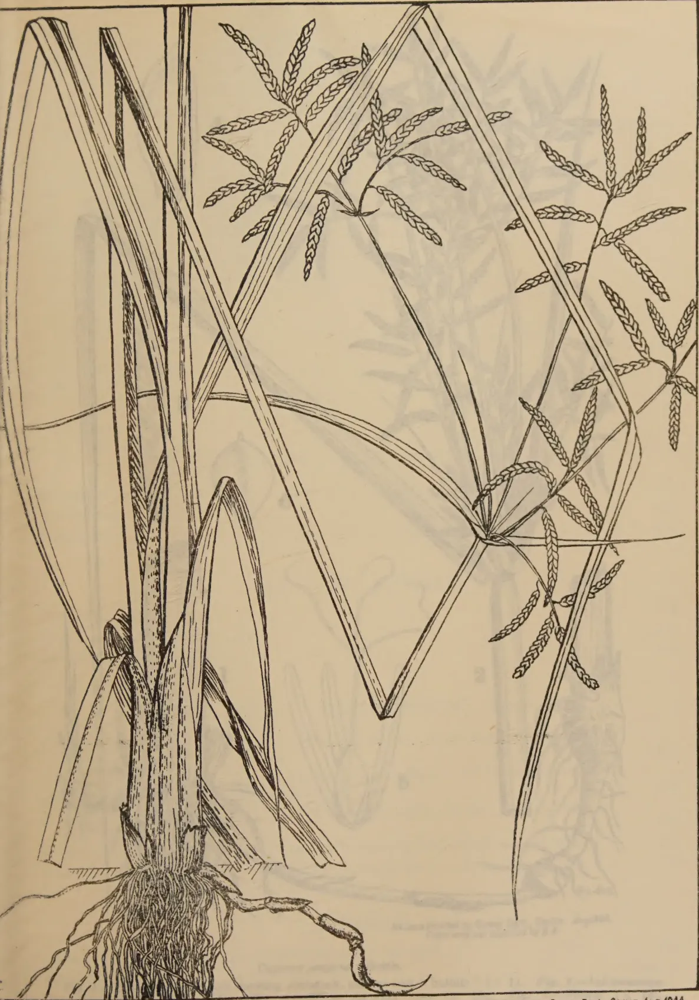
A detailed botanical line drawing of the plant Cyperus procerus. The illustration shows the entire plant, including a dense cluster of roots at the base, several long, narrow, parallel-veined leaves, and a central stem. At the top of the stem, there are several panicles (flower heads) of small, elongated, spike-like structures. The drawing is executed in a fine-lined, stippled style typical of scientific illustrations from the early 20th century.Nº 407. Printed by Survey Dept., Ceylon, Aug. 1944.
From original supplied by D.A.
Cyperus procerus Rottb. (x 1)
[Faint page: no legible print of its own could be verified; text withheld (stage 4 review list)]
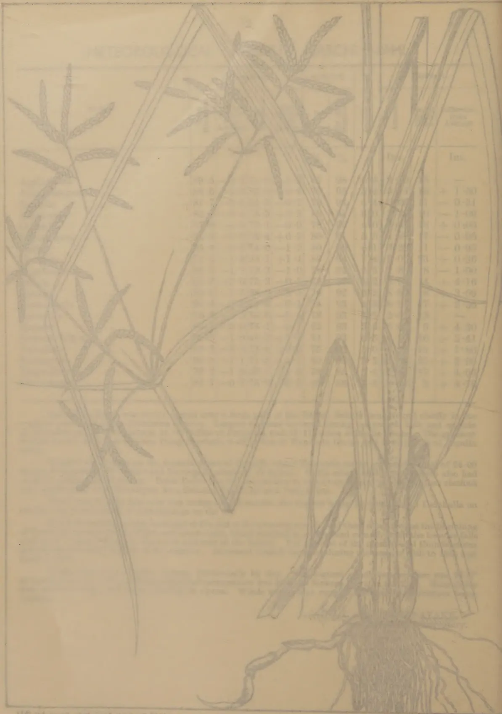
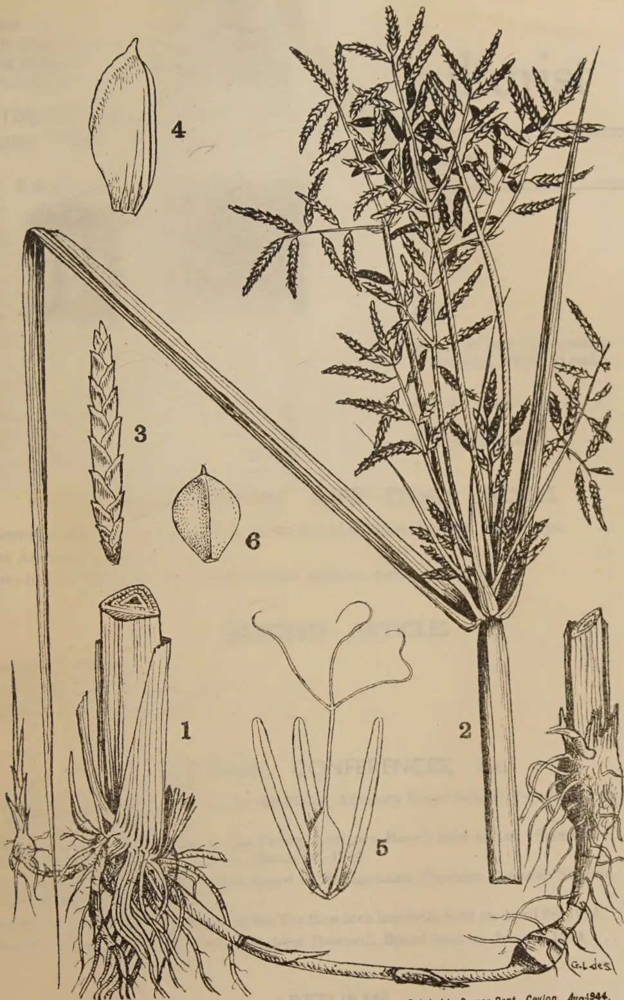
A detailed botanical line drawing of the plant Cyperus procerus. The illustration is divided into six numbered figures:No 408. Printed by Survey Dept., Ceylon. Aug. 1944.
From original supplied by D.A.
Cyperus procerus Rottb.
Fig. 1.—Basal part of plant showing rootstock, stolons and "bulbils" (). Fig. 2.—Inflorescence (). Fig. 3.—Spikelet (). Fig. 4.—Glume in side view (). Fig. 5.—Flower (). Fig. 6.—Nut ().
[Faint page: no legible print of its own could be verified; text withheld (stage 4 review list)]
![Botanical illustration of Ophrys spicata (Herald Orchid). The drawing includes: 1. A full view of the plant showing its thick, fibrous root system, a short rhizome, and a tall, slender stem with a bipinnate leafy inflorescence. 2. A detailed view of the stem base and root system. 3. A single flower bud. 4. A single seed. 5. A longitudinal section of the flower showing the internal structure, including the three stamens and the central pistil. 6. A close-up of the pistil showing the stigma and style. 7. A close-up of the anthers showing the filament and anthers. 8. A close-up of the ovary and style. 9. A close-up of the base of the flower showing the attachment of the stamens and pistil. 10. A close-up of the base of the flower showing the attachment of the stamens and pistil.](7c0e52b3bda4b131572d3441d062222c_1_img.webp)